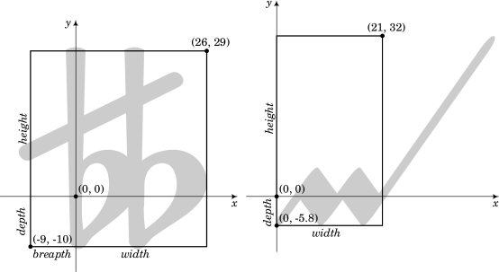

| [Top][Contents][Index] |
LilyPond — Extender
|
Este archivo explica la forma de extender las funcionalidades de LilyPond versión 2.26.0. |
| Appendix A Tutorial de Scheme | Programación desde dentro de LilyPond. | |
| B Interfaces para programadores | Cómo interactuar con Scheme. | |
| C Interfaces de Scheme de LilyPond | Obtener información hacia dentro y fuera de la música. | |
Apéndices | ||
|---|---|---|
| Appendix D GNU Free Documentation License | Licencia de este documento. | |
| Appendix E Índice | ||
|
Para mayor información sobre la forma en que este manual se relaciona con el resto de la documentación, o para leer este manual en otros formatos, consulte Manuales. Si le falta algún manual, encontrará toda la documentación en https://lilypond.org/. |
| [ << Top ] | [Top][Contents][Index] | [ Interfaces para programadores >> ] |
| [ < Top ] | [ Up: Top ] | [ Introducción a Scheme > ] |
Appendix A Tutorial de Scheme
LilyPond utiliza el lenguaje de programación Scheme, tanto como parte de la sintaxis del código de entrada, como para servir de mecanismo interno que une los módulos del programa entre sí. Esta sección es una panorámica muy breve sobre cómo introducir datos en Scheme. Si quiere saber más sobre Scheme, consulte https://www.schemers.org.
LilyPond utiliza la implementación GNU Guile de Scheme, que está basada en el estándar “R5RS” del lenguaje. Si está aprendiendo Scheme para usarlo con LilyPond, no se recomienda trabajar con una implementación distinta (o que se refiera a un estándar diferente). Hay información sobre Guile en https://www.gnu.org/software/guile/. El estándar de Scheme “R5RS” se encuentra en https://www.schemers.org/Documents/Standards/R5RS/.
| A.1 Introducción a Scheme | ||
| A.2 Scheme dentro de LilyPond | ||
| A.3 Construir funciones complicadas |
| [ << Tutorial de Scheme ] | [Top][Contents][Index] | [ Interfaces para programadores >> ] |
| [ < Tutorial de Scheme ] | [ Up: Tutorial de Scheme ] | [ Cajón de arena de Scheme > ] |
A.1 Introducción a Scheme
Comenzaremos con una introducción a Scheme. Para esta breve introducción utilizaremos el intérprete Guile para explorar la manera en que el lenguaje funciona. Una vez nos hayamos familiarizado con Scheme, mostraremos cómo se puede integrar el lenguaje en los archivos de LilyPond.
| [ << Tutorial de Scheme ] | [Top][Contents][Index] | [ Interfaces para programadores >> ] |
| [ < Introducción a Scheme ] | [ Up: Introducción a Scheme ] | [ Variables de Scheme > ] |
A.1.1 Cajón de arena de Scheme
La instalación de LilyPond incluye también la de la implementación Guile de Scheme. Está disponible un cajón de arena de Scheme listo para funcionar con todo LilyPond cargado, con esta llamada de la línea de órdenes:
lilypond scheme-sandbox
Una vez está funcionando el cajón de arena, obtendrá el indicador del sistema de Guile
lily-guile@()>
para introducir expresiones de Scheme. Sin embargo, en los
ejemplos siguentes utilizaremos la cadena más corta guile>
para referirnos al indicador del sistema.
El archivo que contiene el código del cajó de arena (ly/scheme-sandbox.ly) trata de activar la biblioteca readline de GNU para una más cómoda edición sobre la línea de órdenes (por ejemplo, usando las teclas del cursor flecha arriba y flecha abajo para acceder a instrucciones tecleadas con anterioridad). Por el momento, esto solamente funciona con un ejecutable binario de LilyPond que esté enlazado dinámicamente con Guile, lo que no es el caso para los binarios distribuidos ‘oficialmente’. Existen dos posibles formas de solventar este problema, como se muestra a continuación.
- Usar
rlwrap, un envoltorio poco pesado alrededor de la biblioteca readline. Este programa está disponible para sistemas operativos de la familia Unix; lo llamamos conrlwrap lilypond scheme-sandbox
- Usar el editor Emacs en combinación con el Modo Tree-sitter de LilyPond. Esto también funciona bajo Windows.
| [ << Tutorial de Scheme ] | [Top][Contents][Index] | [ Interfaces para programadores >> ] |
| [ < Cajón de arena de Scheme ] | [ Up: Introducción a Scheme ] | [ Tipos de datos simples de Scheme > ] |
A.1.2 Variables de Scheme
Las variables de Scheme pueden tener cualquier valor válido de Scheme, incluso un procedimiento de Scheme.
Las variables de Scheme se crean con define:
guile> (define a 2) guile>
Las variables de Scheme se pueden evaluar en el indicador del sistema de guile, simplemente tecleando el nombre de la variable:
guile> a 2 guile>
Las variables de Scheme se pueden imprimir en la pantalla utilizando la función display:
guile> (display a) 2guile>
Observe que el valor 2 y el indicador del sistema
guile se muestran en la misma línea. Esto se puede evitar
llamando al procedimiento de nueva línea o imprimiendo un carácter
de nueva línea.
guile> (display a)(newline) 2 guile> (display a)(display "\n") 2 guile>
Una vez que se ha creado una variable, su valor se puede modificar
con set!:
guile> (set! a 12345) guile> a 12345 guile>
| [ << Tutorial de Scheme ] | [Top][Contents][Index] | [ Interfaces para programadores >> ] |
| [ < Variables de Scheme ] | [ Up: Introducción a Scheme ] | [ Tipos de datos compuestos de Scheme > ] |
A.1.3 Tipos de datos simples de Scheme
El concepto más básico de un lenguaje son sus tipos de datos: números, cadenas de caracteres, listas, etc. He aquí una lista de los tipos de datos que son de relevancia respecto de la entrada de LilyPond.
- Booleanos
Los valores Booleanos son Verdadero y Falso. Verdadero en Scheme es
#ty Falso es#f.- Números
Los números se escriben de la forma normal,
1es el número (entero) uno, mientras que-1.5es un número en coma flotante (un número no entero).- Cadenas
Las cadenas se encierran entre comillas:
"esto es una cadena"
Las cadenas pueden abarcar varias líneas:
"esto es una cadena"
y los caracteres de nueva línea al final de cada línea se incluirán dentro de la cadena.
Los caracteres de nueva línea también se pueden añadir mediante la inclusión de
\nen la cadena."esto\nes una\ncadena de varias líneas"
Las comillas dobles y barras invertidas se añaden a las cadenas precediéndolas de una barra invertida. La cadena
\a dijo "b"se introduce como"\\a dijo \"b\""
Existen más tipos de datos de Scheme que no se estudian aquí. Para ver un listado completo, consulte la guía de referencia de Guile, https://www.gnu.org/software/guile/manual/html_node/Data-Types.html.
| [ << Tutorial de Scheme ] | [Top][Contents][Index] | [ Interfaces para programadores >> ] |
| [ < Tipos de datos simples de Scheme ] | [ Up: Introducción a Scheme ] | [ Parejas > ] |
A.1.4 Tipos de datos compuestos de Scheme
También existen tipos de datos compuestos en Scheme. Entre los tipos más usados en la programación de LilyPond se encuentran las parejas, las listas, las listas-A y las tablas de hash.
| Parejas | ||
| Listas | ||
| Listas asociativas (listas-A) | ||
| Tablas de hash |
| [ << Tutorial de Scheme ] | [Top][Contents][Index] | [ Interfaces para programadores >> ] |
| [ < Tipos de datos compuestos de Scheme ] | [ Up: Tipos de datos compuestos de Scheme ] | [ Listas > ] |
Parejas
El tipo fundacional de datos compuestos de Scheme es la
pareja. Como se espera por su nombre, una pareja son dos
valores unidos en uno solo. El operador que se usa para formar
una pareja se llama cons.
guile> (cons 4 5) (4 . 5) guile>
Observe que la pareja se imprime como dos elementos rodeados por
paréntesis y separados por un espacio, un punto (.) y otro
espacio. El punto no es un punto decimal, sino más bien un
indicador de pareja.
Las parejas también se pueden introducir como valores literales precediéndolos de un carácter de comilla simple o apóstrofo.
guile> '(4 . 5) (4 . 5) guile>
Los dos elementos de una pareja pueden ser cualquier valor válido de Scheme:
guile> (cons #t #f)
(#t . #f)
guile> '("bla-bla" . 3.1415926535)
("bla-bla" . 3.1415926535)
guile>
Se puede accede al primero y segundo elementos de la pareja
mediante los procedimientos de Scheme car y cdr,
respectivamente.
guile> (define mipareja (cons 123 "Hola") … ) guile> (car mipareja) 123 guile> (cdr mipareja) "Hola" guile>
Nota: cdr se pronuncia "could-er", según Sussman y Abelson,
véase
https://mitpress.mit.edu/sites/default/files/sicp/full-text/book/book-Z-H-14.html#footnote_Temp_133
| [ << Tutorial de Scheme ] | [Top][Contents][Index] | [ Interfaces para programadores >> ] |
| [ < Parejas ] | [ Up: Tipos de datos compuestos de Scheme ] | [ Listas asociativas (listas-A) > ] |
Listas
Una estructura de datos muy común en Scheme es la
lista. Formalmente, una lista ‘bien hecha’ se define como
la lista vacía, representada como '() y con longitud cero,
o bien como una pareja cuyo cdr es a su vez una lista más
corta.
Existen muchas formas de crear listas. Quizá la más común es con
el procedimiento list:
guile> (list 1 2 3 "abc" 17.5) (1 2 3 "abc" 17.5)
La representación de una lista como elementos individuales separados por espacios y encerrada entre paréntesis es realmente una forma compacta de las parejas con punto que constituyen la lista, donde el punto e inmediatamente un paréntesis de apertura se suprimen junto al paréntesis de cierre correspondiente. Sin esta compactación, la salida habría sido
(1 . (2 . (3 . ("abc" . (17.5 . ())))))
De igual forma que con la salida, una lista puede escribirse (después de haber añadido un apóstrofo para evitar su interpretación como una llamada de función) como una lista literal encerrando sus elementos entre paréntesis:
guile> '(17 23 "fulano" "mengano" "zutano") (17 23 "fulano" "mengano" "zutano")
Las listas son una parte fundamental de Scheme. De hecho, Scheme se considera un dialecto de Lisp, donde ‘lisp’ es una abreviatura de ‘List Processing’ (proceso de listas). Todas las expresiones de Scheme son listas.
| [ << Tutorial de Scheme ] | [Top][Contents][Index] | [ Interfaces para programadores >> ] |
| [ < Listas ] | [ Up: Tipos de datos compuestos de Scheme ] | [ Tablas de hash > ] |
Listas asociativas (listas-A)
Un tipo especial de listas son las listas asociativas o listas-A. Se puede usar una lista-A para almacenar datos para su fácil recuperación posterior.
Las listas-A son listas cuyos elementos son parejas. El
car de cada elemento se llama clave, y el cdr
de cada elemento se llama valor. El procedimiento de
Scheme assoc se usa para recuperar un elemento de la
lista-A, y cdr se usa para recuperar el valor:
guile> (define mi-lista-a '((1 . "A") (2 . "B") (3 . "C"))) guile> mi-lista-a ((1 . "A") (2 . "B") (3 . "C")) guile> (assoc 2 mi-lista-a) (2 . "B") guile> (cdr (assoc 2 mi-lista-a)) "B" guile>
Las listas-A se usan mucho en LilyPond para almacenar propiedades y otros datos.
| [ << Tutorial de Scheme ] | [Top][Contents][Index] | [ Interfaces para programadores >> ] |
| [ < Listas asociativas (listas-A) ] | [ Up: Tipos de datos compuestos de Scheme ] | [ Cálculos en Scheme > ] |
Tablas de hash
Estructuras de datos que se utilizan en LilyPond de forma ocasional. Una tabla de hash es similar a una matriz, pero los índices de la matriz pueden ser cualquier tipo de valor de Scheme, no sólo enteros.
Las tablas de hash son más eficientes que las listas-A si hay una gran cantidad de datos que almacenar y los datos cambian con muy poca frecuencia.
La sintaxis para crear tablas de hash es un poco compleja, pero veremos ejemplos de ello en el código fuente de LilyPond.
guile> (define h (make-hash-table 10)) guile> h #<hash-table 0/31> guile> (hashq-set! h 'key1 "val1") "val1" guile> (hashq-set! h 'key2 "val2") "val2" guile> (hashq-set! h 3 "val3") "val3"
Los valores se recuperan de las tablas de hash mediante
hashq-ref.
guile> (hashq-ref h 3) "val3" guile> (hashq-ref h 'key2) "val2" guile>
Las claves y los valores se recuperan como una pareja con
hashq-get-handle. Ésta es la forma preferida, porque
devuelve #f si no se encuentra la clave.
guile> (hashq-get-handle h 'key1) (key1 . "val1") guile> (hashq-get-handle h 'frob) #f guile>
| [ << Tutorial de Scheme ] | [Top][Contents][Index] | [ Interfaces para programadores >> ] |
| [ < Tablas de hash ] | [ Up: Introducción a Scheme ] | [ Procedimientos de Scheme > ] |
A.1.5 Cálculos en Scheme
Scheme se puede usar para hacer cálculos. Utiliza sintaxis
prefija. Sumar 1 y 2 se escribe como (+ 1 2) y
no como el tradicional 1+2.
guile> (+ 1 2) 3
Los cálculos se pueden anidar; el resultado de una función se puede usar para otro cálculo.
guile> (+ 1 (* 3 4)) 13
Estos cálculos son ejemplos de evaluaciones; una expresión como
(* 3 4) se sustituye por su valor 12.
Los cálculos de Scheme son sensibles a las diferencias entre enteros y no enteros. Los cálculos enteros son exactos, mientras que los no enteros se calculan con los límites de precisión adecuados:
guile> (/ 7 3) 7/3 guile> (/ 7.0 3.0) 2.33333333333333
Cuando el intérprete de Scheme encuentra una expresión que es una lista, el primer elemento de la lista se trata como un procedimiento a evaluar con los argumentos del resto de la lista. Por tanto, todos los operadores en Scheme son operadores prefijos.
Si el primer elemento de una expresión de Scheme que es una lista que se pasa al intérprete no es un operador o un procedimiento, se produce un error:
guile> (1 2 3) Backtrace: In current input: 52: 0* [1 2 3] <unnamed port>:52:1: In expression (1 2 3): <unnamed port>:52:1: Wrong type to apply: 1 ABORT: (misc-error) guile>
Aquí podemos ver que el intérprete estaba intentando tratar el 1 como un operador o procedimiento, y no pudo hacerlo. De aquí que el error sea "Wrong type to apply: 1".
Así pues, para crear una lista debemos usar el operador de lista, o podemos precederla de un apóstrofo para que el intérprete no trate de evaluarla.
guile> (list 1 2 3) (1 2 3) guile> '(1 2 3) (1 2 3) guile>
Esto es un error que puede aparecer cuando trabaje con Scheme dentro de LilyPond.
| [ << Tutorial de Scheme ] | [Top][Contents][Index] | [ Interfaces para programadores >> ] |
| [ < Cálculos en Scheme ] | [ Up: Introducción a Scheme ] | [ Definir procedimientos > ] |
A.1.6 Procedimientos de Scheme
Los procedimientos de Scheme son expresiones de Scheme ejecutables que devuelven un valor resultante de su ejecución. También pueden manipular variables definidas fuera del procedimiento.
| Definir procedimientos | ||
| Predicados | ||
| Valores de retorno |
| [ << Tutorial de Scheme ] | [Top][Contents][Index] | [ Interfaces para programadores >> ] |
| [ < Procedimientos de Scheme ] | [ Up: Procedimientos de Scheme ] | [ Predicados > ] |
Definir procedimientos
Los procedimientos se definen en Scheme con define:
(define (nombre-de-la-función arg1 arg2 … argn) expresión-de-scheme-que-devuelve-un-valor)
Por ejemplo, podemos definir un procedimiento para calcular la media:
guile> (define (media x y) (/ (+ x y) 2)) guile> media #<procedure media (x y)>
Una vez se ha definido un procedimiento, se llama poniendo el nombre del procedimiento dentro de una lista. Por ejemplo, podemos calcular la media de 3 y 12:
guile> (media 3 12) 15/2
| [ << Tutorial de Scheme ] | [Top][Contents][Index] | [ Interfaces para programadores >> ] |
| [ < Definir procedimientos ] | [ Up: Procedimientos de Scheme ] | [ Valores de retorno > ] |
Predicados
Los procedimientos de Scheme que devuelven valores booleanos se suelen llamar predicados. Por convenio (pero no por necesidad), los nombres de predicados acaban en un signo de interrogación:
guile> (define (menor-que-diez? x) (< x 10)) guile> (menor-que-diez? 9) #t guile> (menor-que-diez? 15) #f
| [ << Tutorial de Scheme ] | [Top][Contents][Index] | [ Interfaces para programadores >> ] |
| [ < Predicados ] | [ Up: Procedimientos de Scheme ] | [ Condicionales de Scheme > ] |
Valores de retorno
Los procedimientos de Scheme siempre devuelven un valor de retorno, que es el valor de la última expresión ejecutada en el procedimiento. El valor de retorno puede ser cualquier valor de Scheme válido, incluso una estructura de datos compleja o un procedimiento.
A veces, el usuario quiere tener varias expresiones de Scheme
dentro de un procedimiento. Existen dos formas en que se pueden
combinar distintas expresiones. La primera es el procedimiento
begin, que permite evaluar varias expresiones, y devuelve
el valor de la última expresión.
guile> (begin (+ 1 2) (- 5 8) (* 2 2)) 4
La segunda forma de combinar varias expresiones es dentro de un
bloque let. Dentro de un bloque let, se crean una serie de
ligaduras o asignaciones, y después se evalúa una secuencia de
expresiones que pueden incluir esas ligaduras o asignaciones. El
valor de retorno del bloque let es el valor de retorno de la
última sentencia del bloque let:
guile> (let ((x 2) (y 3) (z 4)) (display (+ x y)) (display (- z 4)) … (+ (* x y) (/ z x))) 508
| [ << Tutorial de Scheme ] | [Top][Contents][Index] | [ Interfaces para programadores >> ] |
| [ < Valores de retorno ] | [ Up: Introducción a Scheme ] | [ if > ] |
A.1.7 Condicionales de Scheme
| if | ||
| cond |
| [ << Tutorial de Scheme ] | [Top][Contents][Index] | [ Interfaces para programadores >> ] |
| [ < Condicionales de Scheme ] | [ Up: Condicionales de Scheme ] | [ cond > ] |
if
Scheme tiene un procedimiento if:
(if expresión-de-prueba expresión-de-cierto expresión-de-falso)
expresión-de-prueba es una expresión que devuelve un valor
booleano. Si expresión-de-prueba devuelve #t, el
procedimiento if devuelve el valor de la
expresión-de-cierto, en caso contrario devuelve el valor de
la expresión-de-falso.
guile> (define a 3) guile> (define b 5) guile> (if (> a b) "a es mayor que b" "a no es mayor que b") "a no es mayor que b"
| [ << Tutorial de Scheme ] | [Top][Contents][Index] | [ Interfaces para programadores >> ] |
| [ < if ] | [ Up: Condicionales de Scheme ] | [ Scheme dentro de LilyPond > ] |
cond
Otro procedimiento condicional en Scheme es cond:
(cond (expresión-de-prueba-1 secuencia-de-expresiones-resultante-1)
(expresión-de-prueba-2 secuencia-de-expresiones-resultante-2)
…
(expresión-de-prueba-n secuencia-de-expresiones-resultante-n))
Por ejemplo:
guile> (define a 6) guile> (define b 8) guile> (cond ((< a b) "a es menor que b") ... ((= a b) "a es igual a b") ... ((> a b) "a es mayor que b")) "a es menor que b"
| [ << Tutorial de Scheme ] | [Top][Contents][Index] | [ Interfaces para programadores >> ] |
| [ < cond ] | [ Up: Tutorial de Scheme ] | [ Sintaxis del Scheme de LilyPond > ] |
A.2 Scheme dentro de LilyPond
| [ << Tutorial de Scheme ] | [Top][Contents][Index] | [ Interfaces para programadores >> ] |
| [ < Scheme dentro de LilyPond ] | [ Up: Scheme dentro de LilyPond ] | [ Variables de LilyPond > ] |
A.2.1 Sintaxis del Scheme de LilyPond
El intérprete Guile forma parte de LilyPond, lo que significa que se puede incluir Scheme dentro de los archivos de entrada de LilyPond. Existen varios métodos para incluir Scheme dentro de LilyPond.
La manera más sencilla es utilizar el símbolo de
almohadilla # antes de una expresión de Scheme.
Ahora bien, el código de entrada de LilyPond se estructura en elementos y expresiones, de forma parecida a cómo el lenguaje humano se estructura en palabras y frases. LilyPond tiene un analizador léxico que reconoce elementos indivisibles (números literales, cadenas de texto, elementos de Scheme, nombres de nota, etc.), y un analizador que entiende la sintaxis, la Gramática de LilyPond. Una vez que sabe que se aplica una regla sintáctica concreta, ejecuta las acciones asociadas con ella.
El método del símbolo de almohadilla # para incrustar
Scheme se adapta de forma natural a este sistema. Una vez que el
analizador léxico ve un símbolo de almohadilla, llama al lector de
Scheme para que lea una expresión de Scheme completa (que puede
ser un identificador, una expresión encerrada entre paréntesis, o
algunas otras cosas). Después de que se ha leído la expresión de
Scheme, se almacena como el valor de un elemento SCM_TOKEN
de la gramática. Después de que el analizador sintáctico ya sabe
cómo hacer uso de este elemento, llama a Guila para que evalúe la
expresión de Scheme. Dado que el analizador sintáctico suele
requerir un poco de lectura por delante por parte del analizador
léxico para tomar sus decisiones de análisis sintáctico, esta
separación de lectura y evaluación entre los analizadores léxico y
sintáctico es justamente lo que se necesita para mantener
sincronizadas las ejecuciones de expresiones de LilyPond y de
Scheme. Por este motivo se debe usar el símbolo de
almohadilla # para llamar a Scheme siempre que sea
posible.
Otra forma de llamar al intérprete de Scheme desde LilyPond es el
uso del símbolo de dólar $ en lugar de la almohadilla
para introducir las expresiondes de Scheme. En este caso,
LilyPond evalúa el código justo después de que el analizador
léxico lo ha leído. Comprueba el tipo resultante de la expresión
de Scheme y después selecciona un tipo de elemento (uno de los
varios elementos xxx_IDENTIFIER dentro de la sintaxis) para
él. Crea una copia del valor y la usa como valor del
elemento. Si el valor de la expresión es vacío (El valor de Guile
de *unspecified*), no se pasa nada en absoluto al
analizador sintáctico.
Éste es, de hecho, el mismo mecanismo exactamente que LilyPond
emplea cuando llamamos a cualquier variable o función musical por
su nombre, como \nombre, con la única diferencia de que el
nombre viene determinado por el analizador léxico de LilyPond sin
consultar al lector de Scheme, y así solamente se aceptan los
nombres de variable consistentes con el modo actual de LilyPond.
La acción inmediata de $ puede llevar a alguna que otra
sorpresa, véase Importación de Scheme dentro de LilyPond.
La utilización de # donde el analizador sintáctico lo
contempla es normalmente preferible. Dentro de las expresiones
musicales, aquellas que se crean utilizando # se
interprentan como música. Sin embargo, no se copian antes
de ser utilizadas. Si forman parte de alguna estructura que aún
podría tener algún uso, quizá tenga que utilizar explícitamente
ly:music-deep-copy.
También existen los operadores de ‘división de listas’
$@ y #@ que insertan todos los elementos de una
lista dentro del contexto circundante.
Ahora echemos un vistazo a algo de código de Scheme real. Los procedimientos de Scheme se pueden definir dentro de los archivos de entrada de LilyPond:
#(define (media a b c) (/ (+ a b c) 3))
Observe que los comentarios de LilyPond (% y %{
%}) no se pueden utilizar dentro del código de Scheme, ni
siquiera dentro de un archivo de entrada de LilyPond, porque es el
intérprete Guile, y no el analizador léxico de LilyPond, el que
está leyendo la expresión de Scheme. Los comentarios en el Scheme
de Guile se introducen como sigue:
; esto es un comentario de una línea #! Esto es un comentario de bloque (no anidable) estilo Guile Pero se usan rara vez por parte de los Schemers y nunca dentro del código fuente de LilyPond !#
Durante el resto de esta sección, supondremos que los datos se
introducen en un archivo de música, por lo que añadiremos una
almohadilla # al principio de cada una de las
expresiones de Scheme.
Todas las expresiones de Scheme del nivel jerárquico superior
dentro de un archivo de entrada de LilyPond se pueden combinar en
una sola expresión de Scheme mediante la utilización del operador
begin:
#(begin (define fulanito 0) (define menganito 1))
| [ << Tutorial de Scheme ] | [Top][Contents][Index] | [ Interfaces para programadores >> ] |
| [ < Sintaxis del Scheme de LilyPond ] | [ Up: Scheme dentro de LilyPond ] | [ Depuración del código de Scheme > ] |
A.2.2 Variables de LilyPond
Las variables de LilyPond se almacenan internamente en la forma de variables de Scheme. Así,
doce = 12
equivale a
#(define doce 12)
Esto significa que las variables de LilyPond están disponibles para su uso dentro de expresiones de Scheme. Por ejemplo, podríamos usar
veintiCuatro = (* 2 doce)
lo que daría lugar a que el número 24 se almacenase dentro
de la variable veintiCuatro de LilyPond (y de Scheme).
El lenguaje Scheme permite la modificación de expresiones
complejas in situ y LilyPond hace uso de esta ‘modificación in
situ’ al usar funciones musicales. Pero cuando las expresiones
musicales se almacenan dentro de variables en lugar de ser
introducidas directamente, lo que habitualmente se espera cuando
se pasan a funciones musicales sería que el valor original quedase
intacto. Así pues, cuando se referencia una variable musical con
la barra invertida (como \veintiCuatro), LilyPond crea una
copia del valor musical de tal variable para utilizarla dentro de
la expresión musical circundante, en lugar de usar el valor de la
variable directamente.
Por ello, las expresiones musicales de Scheme escritas con la
sintasis de almohadilla # deberían utilizarse para
cualquier material creado ‘partiendo de cero’ (o que se ha
copiado explícitamente) en lugar de utilizarse para referenciar
música directamente.
Véase también
Manual de extensión: Sintaxis del Scheme de LilyPond.
| [ << Tutorial de Scheme ] | [Top][Contents][Index] | [ Interfaces para programadores >> ] |
| [ < Variables de LilyPond ] | [ Up: Scheme dentro de LilyPond ] | [ Variables de entrada y Scheme > ] |
A.2.3 Depuración del código de Scheme
Cuando se están depurando programas de Scheme grandes, es de gran
ayuda que si ocurre un error, podamos saber exactamente en qué
línea del programa se ha producido dicho error. Para habilitar
que se muestren las ubicaciones del código fuente para los errores
dentro del código de Scheme, LilyPond debe ejecutarse con la
opción de línea de órdenes -dcompile-scheme-code.
Como alternativa, tiene el mismo efecto escribir
#(ly:set-option 'compile-scheme-code) en el inicio
del archivo de entrada de LilyPond.
Es más, para obtener aún más información acerca del error, puede
usar la opción -ddebug-eval o escribir
#(debug-enable 'backtrace) dentro del archivo. Bajo este
modo, si se produce un error, se imprime una prolija información
de traza o “backtrace”, que contiene información acerca de
todas las llamadas de función que dieron lugar al evento
problemático.
Advertencias y problemas conocidos
A causa de una limitación en la implementación de Guile, por el momento la opción -dcompile-scheme-code hace imposible compilar archivos de LilyPond que contengan más de unas pocas de miles de expresiones de Scheme.
A.2.4 Variables de entrada y Scheme
El formato de entrada contempla la noción de variables: en el
siguiente ejemplo, se asigna una expresión musical a una variable
con el nombre traLaLa.
traLaLa = { c'4 d'4 }
También hay una forma de ámbito: en el ejemplo siguiente, el
bloque \layout también contiene una variable
traLaLa, que es independiente de la \traLaLa
externa.
traLaLa = { c'4 d'4 }
\layout { traLaLa = 1.0 }
En efecto, cada archivo de entrada constituye un ámbito, y cada
bloque \header, \midi y \layout son ámbitos
anidados dentro del ámbito de nivel superior.
Tanto las variables como los ámbitos están implementados en el sistema de módulos de Guile. A cada ámbito se adjunta un módulo anónimo de Scheme. Una asignación de la forma:
traLaLa = { c'4 d'4 }
se convierte internamente en una definición de Scheme:
(define traLaLa Valor Scheme de '…')
Esto significa que las variables de LilyPond y las variables de
Scheme se pueden mezclar con libertad. En el ejemplo siguiente,
se almacena un fragmento de música en la variable traLaLa,
y se duplica usando Scheme. El resultado se importa dentro de un
bloque \score por medio de una segunda variable
twice:
traLaLa = { c'4 d'4 } #(define newLa (map ly:music-deep-copy (list traLaLa traLaLa))) #(define twice (make-sequential-music newLa)) \twice
![[image of music]](c8/lily-79e9e275.png)
En realidad, éste es un ejemplo bastante interesante. La
asignación solo tiene lugar después de que el analizador
sintáctico se ha asegurado de que no sigue nada parecido a
\addlyrics, de manera que necesita comprobar lo que viene a
continuación. Lee el símbolo # y la expresión de Scheme
siguiente sin evaluarla, de forma que puede proceder a la
asignación, y posteriormente ejecutar el código de Scheme
sin problema.
| [ << Tutorial de Scheme ] | [Top][Contents][Index] | [ Interfaces para programadores >> ] |
| [ < Variables de entrada y Scheme ] | [ Up: Scheme dentro de LilyPond ] | [ Propiedades de los objetos > ] |
A.2.5 Importación de Scheme dentro de LilyPond
El ejemplo anterior muestra cómo ‘exportar’ expresiones
musicales desde la entrada al intérprete de Scheme. Lo contrario
también es posible. Colocándolo después de $, un valor de
Scheme se interpreta como si hubiera sido introducido en la
sintaxis de LilyPond. En lugar de definir \twice, el
ejemplo anterior podría también haberse escrito como
… $(make-sequential-music newLa)
Podemos utilizar $ con una expresión de Scheme en cualquier
lugar en el que usaríamos \nombre después de haber
asignado la expresión de Scheme a una variable nombre. Esta
sustitución se produce dentro del ‘analizador léxico’, de manera
que LilyPond no llega a darse cuenta de la diferencia.
Sin embargo, existe un inconveniente, el de la medida del tiempo.
Si hubiésemos estado usando $ en vez de # para
definir newLa en el ejemplo anterior, la siguiente
definición de Scheme habría fracasado porque traLaLa no
habría sido definida aún. Para ver una explicación de este
problema de momento temporal, véase Sintaxis del Scheme de LilyPond.
Un conveniente aspecto posterior pueden ser los operadores de
‘división de listas’ $@ y #@ para la inserción
de los elementos de una lista dentro del contexto circundante.
Utilizándolos, la última parte del ejemplo se podría haber escrito
como
…
{ #@newLa }
Aquí, cada elemento de la lista que está almacenado en
newLa se toma en secuencia y se inserta en la lista, como
si hubiésemos escrito
{ #(first newLa) #(second newLa) }
Ahora bien, en todas esas formas, el código de Scheme se evalúa en el momento en que el código de entrada aún se está procesando, ya sea en el analizador léxico o en el analizador sintáctico. Si necesitamos que se ejecute en un momento posterior, debemos consultar Funciones de Scheme vacías, o almacenarlo dentro de un procedimiento:
#(define (nopc)
(ly:set-option 'point-and-click #f))
…
#(nopc)
{ c'4 }
A.2.6 Propiedades de los objetos
Las propiedades de los objetos se almacenan en LilyPond en forma de cadenas de listas-A, que son listas de listas-A. Las propiedades se establecen añadiendo valores al principio de la lista de propiedades. Las propiedades se leen extrayendo valores de las listas-A.
El establecimiento de un valor nuevo para una propiedad requiere la asignación de un valor a la lista-A con una clave y un valor. La sintaxis de LilyPond para hacer esto es la siguiente:
\override Stem.thickness = #2.6
Esta instrucción ajusta el aspecto de las plicas. Se añade una
entrada de lista-A '(thickness . 2.6) a la lista de
propiedades de un objeto Stem. thickness se mide a
partir del grosor de las líneas del pentagrama, y así estas plicas
serán 2.6 veces el grosor de las líneas del pentagrama.
Esto hace que las plicas sean casi el doble de gruesas de lo
normal. Para distinguir entre las variables que se definen en los
archivos de entrada (como veintiCuatro en el ejemplo
anterior) y las variables de los objetos internos, llamaremos a
las últimas ‘propiedades’ y a las primeras ‘variables.’ Así,
el objeto plica tiene una propiedad thickness (grosor),
mientras que veintiCuatro es una variable.
| [ << Tutorial de Scheme ] | [Top][Contents][Index] | [ Interfaces para programadores >> ] |
| [ < Propiedades de los objetos ] | [ Up: Scheme dentro de LilyPond ] | [ Desplazamientos > ] |
A.2.7 Variables de LilyPond compuestas
| Desplazamientos | ||
| Fracciones | ||
| Dimensiones | ||
| Listas-A de propiedades | ||
| Cadenas de listas-A |
| [ << Tutorial de Scheme ] | [Top][Contents][Index] | [ Interfaces para programadores >> ] |
| [ < Variables de LilyPond compuestas ] | [ Up: Variables de LilyPond compuestas ] | [ Fracciones > ] |
Desplazamientos
Los desplazamientos bidimensionales (coordenadas X e Y) se
almacenan como parejas. El car del desplazamiento
es la coordenada X, y el cdr es la coordenada Y.
\override TextScript.extra-offset = #'(1 . 2)
Esto asigna la pareja (1 . 2) a la propiedad
extra-offset del objeto TextScript. Estos números se miden
en espacios de pentagrama, y así esta instrucción mueve el objeto
un espacio de pentagrama a la derecha, y dos espacios hacia
arriba.
Los procedimientos para trabajar con desplazamientos están en scm/lily-library.scm.
| [ << Tutorial de Scheme ] | [Top][Contents][Index] | [ Interfaces para programadores >> ] |
| [ < Desplazamientos ] | [ Up: Variables de LilyPond compuestas ] | [ Dimensiones > ] |
Fracciones
Las fracciones tal y como se utilizan por parte de LilyPond se
almacenan, de nuevo, como parejas, esta vez de enteros sin
signo. Mientras que Scheme es capaz de representar números
racionaes como un tipo nativo, musicalmente ‘2/4’ y
‘1/2’ no son lo mismo, y necesitamos poder distinguir entre
ellos. De igual forma, no existe el concepto de ‘fracciones’
negativas en LilyPond. Así pues, 2/4 en LilyPond significa
(2 . 4) en Scheme, y #2/4 en LilyPond significa
1/2 en Scheme.
| [ << Tutorial de Scheme ] | [Top][Contents][Index] | [ Interfaces para programadores >> ] |
| [ < Fracciones ] | [ Up: Variables de LilyPond compuestas ] | [ Listas-A de propiedades > ] |
Dimensiones
Las parejas se usan también para almacenar intervalos, que
representan un rango de números desde el mínimo (el car)
hasta el máximo (el cdr). Los intervalos se usan para
almacenar las dimensiones en X y en Y de los objetos imprimibles.
Para dimensiones en X, el car es la coordenada X de la
parte izquierda, y el cdr es la coordenada X de la parte
derecha. Para las dimensiones en Y, el car es la
coordenada inferior, y el cdr es la coordenada superior.
Los procedimientos para trabajar con intervalos están en scm/lily-library.scm. Se deben usar estos procedimientos siempre que sea posible, para asegurar la consistencia del código.
| [ << Tutorial de Scheme ] | [Top][Contents][Index] | [ Interfaces para programadores >> ] |
| [ < Dimensiones ] | [ Up: Variables de LilyPond compuestas ] | [ Cadenas de listas-A > ] |
Listas-A de propiedades
Una lista-A de propiedades es una estructura de datos de LilyPond que es una lista-A cuyas claves son propiedades y cuyos valores son expresiones de Scheme que dan el valor deseado de la propiedad.
Las propiedades de LilyPond son símbolos de Scheme, como por
ejemplo 'thickness.
| [ << Tutorial de Scheme ] | [Top][Contents][Index] | [ Interfaces para programadores >> ] |
| [ < Listas-A de propiedades ] | [ Up: Variables de LilyPond compuestas ] | [ El modelo de caja de LilyPond > ] |
Cadenas de listas-A
Una cadena de listas-A es una lista que contiene listas-A de propiedades.
El conjunto de todas las propiedades que se aplican a un grob se almacena por lo general como una cadena de listas-A. Para poder encontrar el valor de una propiedad determinada que debería tener un grob, se busca por todas las listas-A de la cadena, una a una, tratando de encontrar una entrada que contenga la clave de la propiedad. Se devuelve la primera entrada de lista-A que se encuentre, y el valor es el valor de la propiedad.
El procedimiento de Scheme chain-assoc-get se usa
normalmente para obtener los valores de propiedades.
| [ << Tutorial de Scheme ] | [Top][Contents][Index] | [ Interfaces para programadores >> ] |
| [ < Cadenas de listas-A ] | [ Up: Scheme dentro de LilyPond ] | [ Representación interna de la música > ] |
A.2.8 El modelo de caja de LilyPond
El modelo caja ‘clásico’ para el texto (como el que se utiliza, por ejemplo, en TeX), incluye las tres dimensiones ancho, alto, and profundo: los glifos se ubican sobre una línea de base horizontal; la altura de un glifo es el tamaño vertical por encima de esta línea, la profundidad es el tamaño por debajo de esta línea, y el ancho comprende el tamaño horizontal del glifo. LilyPond añade una cuarta dimensión, el breapth,1 para extender el tamaño horizonal por la parte izquierda del ‘punto de referencia’ del glifo, denotado con ‘(0, 0)’ en la imagen que aparece a continuación. La principal razón de ser de esta extensión es que muchos glifos como los calderones son horizontalmente simétricos (y también están unidos de forma simétrica centrados sobre una cabeza de nota), y el mejor punto de referencia para tales glifos es, por tanto, el punto medio horizontal. Otros glifos como la alteración accidental de un cuarto de tono, que se muestra a la izquierda en la imagen, pueden tener también una cantidad considerable de ‘breapth’.

Como se muestra en el glifo de ‘custos’ a la derecha de la imagen, la caja que se define para un glifo puede ser muy distinta de lo que realmente se imprime: LilyPond coloca el lado derecho del glifo del custos al final del pentagrama, haciendo que la larga línea de extensión se salga por el lado derecho, metiéndose dentro del margen.
Este modelo de caja no se usa solo para los glifos musicales de
LilyPond sino también para los elementos de marcado de cualquier
tipo. Tanto las dimensiones horizontales como las verticales se
especifican con un ‘extent’ o ámbito; usando la notación de
Scheme, el glifo de la izquierda en la imagen anterior tiene unas
dimensiones horizontales de #'(-9 . 26) y unas dimensiones
verticales de #'(-10 . 29).
LilyPond también utiliza algunas extensiones sobre el modelo de caja para cubrir casos especiales.
- Si no queremos que una caja tome parte en el algoritmo de
espaciado musical de LilyPond a lo largo de un determinado eje,
tenemos que establecer las dimensiones de este eje al valor (que
en otro contexto no tiene ningún sentido)
#'(+inf.0 . -inf.0)(desde infinito positivo hasta infinito negativo), también disponible como el símboloempty-interval. - Dentro de los elementos de marcado, el espaciado (que
normalmente causa algún movimiento horizontal o vertical del
siguiente objeto del marcado) también está configurado
internamente como una caja: las dimensiones a lo largo del eje
ortogonal están fijadas al valor
empty-intervalcomo un marcador, y un valor de espaciado s está representado como las dimensiones#'(0 . s). A diferencia de las cajas ‘normales’, el espaciado también puede ser negativo: por ejemplo, las dimensiones horizontales de la instrucción de marcado\hspace #-4son#'(0 . -4).
| [ << Tutorial de Scheme ] | [Top][Contents][Index] | [ Interfaces para programadores >> ] |
| [ < El modelo de caja de LilyPond ] | [ Up: Scheme dentro de LilyPond ] | [ Construir funciones complicadas > ] |
A.2.9 Representación interna de la música
Internamente, la música se representa como una lista de Scheme. La lista contiene varios elementos que afectan a la salida impresa. El análisis sintáctico es el proceso de convertir la música de la representación de entrada de LilyPond a la representación interna de Scheme.
Cuando se analiza una expresión musical, se convierte en un conjunto de objetos musicales de Scheme. La propiedad definitoria de un objeto musical es que ocupa un tiempo. El tiempo que ocupa se llama duración. Las duraciones se expresan como un número racional que mide la longitud del objeto musical en redondas.
Un objeto musical tiene tres clases de tipos:
- nombre musical: Cada expresión musical tiene un nombre. Por
ejemplo, una nota lleva a un NoteEvent, y
\simultaneouslleva a una SimultaneousMusic. Hay una lista de todas las expresiones disponibles en el manual de Referencia de funcionamiento interno, bajo el epígrafe Music expressions. - ‘type’ (tipo) o interface: Cada nombre musical tiene varios
‘tipos’ o interfaces, por ejemplo, una nota es un
event, pero también es unnote-event, unrhythmic-event, y unmelodic-event. Todas las clases de música están listadas en el manual de Referencia de funcionamiento interno, bajo el epígrafe Music classes. - objeto de C++: Cada objeto musical está representado por un objeto
de la clase
Musicde C++.
La información real de una expresión musical se almacena en
propiedades. Por ejemplo, un NoteEvent tiene
propiedades pitch y duration que almacenan la altura
y la duración de esa nota. Hay una lista de todas la propiedades
disponibles en el manual de Referencia de funcionamiento interno,
bajo el epígrafe Music properties.
Una expresión musical compuesta es un objeto musical que contiene
otros objetos musicales dentro de sus propiedades. Se puede
almacenar una lista de objetos dentro de la propiedad
elements de un objeto musical, o un único objeto musical
‘hijo’ dentro de la propiedad element. Por ejemplo,
SequentialMusic tiene su hijo dentro de
elements, y GraceMusic tiene su argumento
único dentro de element. El cuerpo de una repetición se
almacena dentro de la propiedad element de
VoltaRepeatedMusic, y las alternativas dentro de
elements.
| [ << Tutorial de Scheme ] | [Top][Contents][Index] | [ Interfaces para programadores >> ] |
| [ < Representación interna de la música ] | [ Up: Tutorial de Scheme ] | [ Una primera aproximación (ejemplo) > ] |
A.3 Construir funciones complicadas
Esta sección explica cómo reunir la información necesaria para crear funciones musicales complicadas.
A.3.1 Una primera aproximación (ejemplo)
- El problema
Usando la entrada siguiente, el signo de ‘espressivo’ (es decir, los dos reguladores pequeños) deberían hacerse más anchos, pero no más altos.
{ f'\espressivo }
![[image of music]](73/lily-49561ead.png)
- Soluciones posibles
- crear un sello nuevo
- escalar el sello por omisión en la dirección del eje X
- Comentarios sobre esta solución
La solución A es factible. Sin embargo, dará como resultado un esfuerzo de codificación mayor. Por otro lado, la solución B es más económica, aunque tiene la desventaja de que no imprime resultados aceptables en todos los casos (si bien usted podría no saberlo hasta después de haberlo intentado).
⇒ elija la solución B.
- Codificación
- Si quiere manipular el sello por omisión tendrá que encontrar
información sobre él.
El signo de espressivo es un grob del tipo
Script. Si buscamos esto en el IR (Script), encontramos‘stencil’ (stencil): ‘ly:script-interface::print’Vamos a comprobar si es correcto. PAra asegurarnos de que afectamos al grob correcto, vamos a emplear colores. Existe una función predefinida para ello, véase Scheme functions.
-- Function: stencil-with-color stencil color Return a modified version of the given stencil that is colored with the given color. See ‘normalize-color’ for possible color formats.-- Function: normalize-color color Convert a color given in any of the supported formats into a list of 4 numbers: R, G, B, A. Possible formats are: such a list of 4 numbers; a list of 3 numbers (transparency defaults to 1.0); a CSS string (named color, or “#RRGGBB”, or “#RRGGBBAA”, or “#RGB”, or “#RGBA”).Usando un color con nombre (‘red’, rojo), ello da como resultado el siguiente código.
colorDefaultStencil = \once \override Script.stencil = % `lambda` starts a procedure; its argument is `grob`. #(lambda (grob) ;; With `let`, local variables are defined. (let ((stil (ly:script-interface::print grob))) ;; The procedure returns the colored default stencil. (stencil-with-color stil red))) { \colorDefaultStencil f'\espressivo }
![[image of music]](eb/lily-bdc4f771.png)
Estupendo, funciona.
- Esta clase de operación ( tomar un sello o propiedad por omisión y
devolver una versión modificada del mismo) es muy común, y
LilyPond aporta una función especial para ello:
grob-transformer.-- Function: grob-transformer property func Create an override value good for applying FUNC to either pure or unpure values. FUNC is called with the respective grob as first argument and the default value (after resolving all callbacks) as the second.Vamos a probarla (el concepto de ‘pure’ frente a ‘unpure’ se explica más tarde, see Contenedores Unpure-pure; podemos ignorarlo por el momento).
colorDefaultStencil = \once \override Script.stencil = #(grob-transformer 'stencil (lambda (grob orig) (stencil-with-color orig red))) { \colorDefaultStencil f'\espressivo }
![[image of music]](df/lily-d6caa1a5.png)
¡Éxito total!
- Para obtener un sello a diferente escala tenemos que usar
-- Function: ly:stencil-scale stil x y Scale stencil STIL using the horizontal and vertical scaling factors X and optional Y (defaulting to X). Negative values flip or mirror STIL without changing its origin; this may result in collisions unless it is repositioned.tomado del mismo capítulo en el manual de Referencia del Funcionamiento Interno.
Resultado:
scaleColorDefaultStencil = \once \override Script.stencil = #(grob-transformer 'stencil (lambda (grob orig) (stencil-with-color (ly:stencil-scale orig ;; 1 is the neutral element with ly:stencil-scale, ;; i.e., scaling with '1 1' (for x- and y-axis) ;; returns a visibly unchanged stencil. 2 1) red))) { \scaleColorDefaultStencil f'\espressivo }
![[image of music]](c9/lily-e6550537.png)
Aparte del color, parece ser la salida deseada.
- Sin embargo existen algunos problemas, como se puede ver en el
ejemplo siguiente:
{ \scaleColorDefaultStencil f'_\espressivo ^\fermata }![[image of music]](a9/lily-b3b8c45f.png)
- − El calderón está a escala también.
- − Es fastidioso tener que teclear la instrucción antes de la nota o
notas y el
\espressivodespués de la nota.
La solución para ambos: ¡use
\tweak!{ f'-\tweak stencil #(grob-transformer 'stencil (lambda (grob orig) (stencil-with-color (ly:stencil-scale orig 2 1) red))) _\espressivo ^\fermata }
![[image of music]](7a/lily-335bb7c4.png)
Esto hace lo que queríamos aunque no es agradable teclear tanto; vamos a definir una variable y usarla para el trucaje. Con algo de copiar y pegar obtenemos lo siguiente.
#(define longer-script (grob-transformer 'stencil (lambda (grob orig) (stencil-with-color (ly:stencil-scale orig 2 1) red)))) { f'-\tweak stencil #longer-script _\espressivo ^\fermata }
![[image of music]](91/lily-04a6c2cb.png)
FUnciona correctamente, aunque los valores de escalado están codificados de forma rígida, y escribir repetidamente
-\tweak stencil #longer-scriptaún resulta incómodo.Para corregirlo, vamos a introducir primero una serie de variables dentro de la función
longer-scriptpara los valores de escalado en x e y.#(define (longer-script x y) (grob-transformer 'stencil (lambda (grob orig) (stencil-with-color (ly:stencil-scale orig x y) red))))En segundo lugar, para reducir la cantidad de tecleo, definimos una función de evento, see Funciones de eventos. Los elementos dentro del primer grupo de paréntesis (‘(x-val y-val)’) son las variables de función, los elementos dentro del segundo paréntesis agrupan los respectivos tipos de variables (comprobamos para número dos veces; consulte Predefined type predicates para ver todas las comprobaciones posibles).
scaleEspr = #(define-event-function (x-val y-val) (number? number?) #{ \tweak stencil #(longer-script x-val y-val) \espressivo #}) { f'_\scaleEspr 2 1 ^\fermata }![[image of music]](21/lily-c7d54992.png)
Correcto, ¡funciona como se esperaba! Observe el uso de
#{ … #}: dentro de esta construcción de Scheme, podemos usar sintaxis de LilyPond, y los argumentos de la función (como x-val) se expanden adecuadamente. See Bloques de código de LilyPond.
- Si quiere manipular el sello por omisión tendrá que encontrar
información sobre él.
- El código terminado
Para terminar, vamos a poner algo de orden.
- − Solo queremos realizar un escalado en la dirección del eje X, por lo que codificamos de forma rígida el escalado en el eje Y dentro de la función de evento.
- − Eliminar el color.
Al final, todo esto conduce al siguiente código.
#(define (longer-script x y) (grob-transformer 'stencil (lambda (grob orig) (ly:stencil-scale orig x y)))) longEspressivo = #(define-event-function (x-val) (number?) #{ \tweak stencil #(longer-script x-val 1) \espressivo #}) { f'^\longEspressivo #2 _\fermata }
![[image of music]](38/lily-7080d09c.png)
Voilà!
La principal ventaja de usar
grob-transformeres que ya no nos tenemos que preocupar por el nombre concreto de la función de sello. En el siguiente ejemplo rotamos 90 grados el sello de una ligadura de expresión y una barra; el hecho de que las funciones de sello se llamen respectivamentely:slur::printyly:beam::print, no nos preocupa.#(define rotate-90 (grob-transformer 'stencil (lambda (grob orig) (ly:stencil-rotate orig 90 0 0)))) { f'8( g') f'8-\tweak stencil #rotate-90 ( g') f'8[ g'] f'8-\tweak stencil #rotate-90 [ g'] }
![[image of music]](1c/lily-cfcb9a55.png)
| [ << Tutorial de Scheme ] | [Top][Contents][Index] | [ Interfaces para programadores >> ] |
| [ < Una primera aproximación (ejemplo) ] | [ Up: Construir funciones complicadas ] | [ Propiedades musicales > ] |
A.3.2 Presentación de las expresiones musicales
Si se está escribiendo una función musical, puede ser muy
instructivo examinar cómo se almacena internamente una expresión
musical. Esto se puede hacer con la función musical
\displayMusic.
{
\displayMusic { c'4\f }
}
imprime lo siguiente:
(make-music
'SequentialMusic
'elements
(list (make-music
'NoteEvent
'articulations
(list (make-music
'AbsoluteDynamicEvent
'text
"f"))
'duration
(ly:make-duration 2 0 1/1)
'pitch
(ly:make-pitch 0 0 0))))
De forma predeterminada, LilyPond imprime estos mensajes sobre la
consola junto al resto de los mensajes. Para separar estos
mensajes y guardar el resultado de \display{LOQUESEA},
puede especificar que se use un puerto de salida opcional:
{
\displayMusic #(open-output-file "display.txt") { c'4\f }
}
Esto sobreescribe el archivo de salida anterior cada vez ques e llama; si necesitamos escribir más de una expresión, debemos usar una variable para el puerto y reutilizarla:
{
port = #(open-output-file "display.txt")
\displayMusic \port { c'4\f }
\displayMusic \port { d'4 }
#(close-output-port port)
}
El manual de Guile describe los puertos detalladamente. Solo es realmente necesario cerrar el puerto si necesitamos leer el archivo antes de que LilyPond termine; en el primer ejemplo, no nos hemos molestado en hacerlo.
Un poco de reformateo hace a la información anterior más fácil de leer:
(make-music 'SequentialMusic
'elements (list
(make-music 'NoteEvent
'articulations (list
(make-music 'AbsoluteDynamicEvent
'text
"f"))
'duration (ly:make-duration 2 0 1/1)
'pitch (ly:make-pitch 0 0 0))))
Una secuencia musical { … } tiene el nombre
SequentialMusic, y sus expresiones internas se almacenan
coma una lista dentro de su propiedad 'elements. Una nota
se representa como un objeto NoteEvent (que almacena las
propiedades de duración y altura) con información adjunta (en este
caso, un evento AbsoluteDynamicEvent con una propiedad
"f" de texto) almacenada en su propiedad
articulations.
\displayMusic devuelve la música que imprime en la consola,
y por ello se interpretará al tiempo que se imprime en la consola.
Para evitar la interpretación, escriba \void antes de
\displayMusic.
A.3.3 Propiedades musicales
Veamos un ejemplo:
someNote = c' \displayMusic \someNote ===> (make-music 'NoteEvent 'duration (ly:make-duration 2 0 1/1) 'pitch (ly:make-pitch 0 0 0))
El objeto NoteEvent es la representación de
someNote. Sencillo. ¿Y si ponemos el c’ dentro de un
acorde?
someNote = <c'>
\displayMusic \someNote
===>
(make-music
'EventChord
'elements
(list (make-music
'NoteEvent
'duration
(ly:make-duration 2 0 1/1)
'pitch
(ly:make-pitch 0 0 0))))
Ahora el objeto NoteEvent es el primer objeto de la
propiedad 'elements de someNote.
La función display-scheme-music es la función que se usa
por parte de \displayMusic para imprimir la representación
de Scheme de una expresión musical.
#(display-scheme-music (first (ly:music-property someNote 'elements))) ===> (make-music 'NoteEvent 'duration (ly:make-duration 2 0 1/1) 'pitch (ly:make-pitch 0 0 0))
Después se accede a la altura de la nota a través de la propiedad
'pitch del objeto NoteEvent:
#(display-scheme-music
(ly:music-property (first (ly:music-property someNote 'elements))
'pitch))
===>
(ly:make-pitch 0 0 0)
La altura de la nota se puede cambiar estableciendo el valor de
esta propiedad 'pitch.
#(set! (ly:music-property (first (ly:music-property someNote 'elements))
'pitch)
(ly:make-pitch 0 1 0)) ;; establecer la altura a d'.
\displayLilyMusic \someNote
===>
d'4
| [ << Tutorial de Scheme ] | [Top][Contents][Index] | [ Interfaces para programadores >> ] |
| [ < Propiedades musicales ] | [ Up: Construir funciones complicadas ] | [ Añadir articulaciones a las notas (ejemplo) > ] |
A.3.4 Duplicar una nota con ligaduras (ejemplo)
Supongamos que queremos crear una función que convierte una
entrada como a en { a( a) }. Comenzamos
examinando la representación interna de la música con la que
queremos terminar.
\displayMusic{ a'( a') }
===>
(make-music
'SequentialMusic
'elements
(list (make-music
'NoteEvent
'articulations
(list (make-music
'SlurEvent
'span-direction
-1))
'duration
(ly:make-duration 2 0 1/1)
'pitch
(ly:make-pitch 0 5 0))
(make-music
'NoteEvent
'articulations
(list (make-music
'SlurEvent
'span-direction
1))
'duration
(ly:make-duration 2 0 1/1)
'pitch
(ly:make-pitch 0 5 0))))
La mala noticia es que las expresiones SlurEvent se deben
añadir ‘dentro’ de la nota (dentro de la propiedad
articulations).
Ahora examinamos la entrada.
\displayMusic a' ===> (make-music 'NoteEvent 'duration (ly:make-duration 2 0 1/1) 'pitch (ly:make-pitch 0 5 0))))
Así pues, en nuestra función, tenemos que clonar esta expresión
(de forma que tengamos dos notas para construir la secuencia),
añadir SlurEvent a la propiedad 'articulations de
cada una de ellas, y por último hacer una secuencia
SequentialMusic con los dos elementos NoteEvent.
Para añadir a una propiedad, es útil saber que una propiedad no
establecida se lee como '(), la lista vacía, así que no se
requiere ninguna comprobación especial antes de que pongamos otro
elemento delante de la propiedad articulations.
doubleSlur = #(define-music-function (note) (ly:music?)
"Return: { note ( note ) }.
`note` is supposed to be a single note."
(let ((note2 (ly:music-deep-copy note)))
(set! (ly:music-property note 'articulations)
(cons (make-music 'SlurEvent 'span-direction -1)
(ly:music-property note 'articulations)))
(set! (ly:music-property note2 'articulations)
(cons (make-music 'SlurEvent 'span-direction 1)
(ly:music-property note2 'articulations)))
(make-music 'SequentialMusic 'elements (list note note2))))
A.3.5 Añadir articulaciones a las notas (ejemplo)
La manera fácil de añadir articulación a las notas es juxtaponer dos expresiones musicales. Sin embargo, supongamos que queremos escribir una función musical que lo haga.
Una $variable dentro de la notación #{…#} es
como una \variable normal en la notación clásica de
LilyPond. Podríamos escribir
{ \music -. -> }
pero a los efectos de este ejemplo, aprenderemos ahora cómo hacerlo en Scheme. Empezamos examinando nuestra entrada y la salida deseada.
% input
\displayMusic c4
===>
(make-music
'NoteEvent
'duration
(ly:make-duration 2 0 1/1)
'pitch
(ly:make-pitch -1 0 0))))
=====
% desired output
\displayMusic c4->
===>
(make-music
'NoteEvent
'articulations
(list (make-music
'ArticulationEvent
'articulation-type 'accent))
'duration
(ly:make-duration 2 0 1/1)
'pitch
(ly:make-pitch -1 0 0))
Vemos que una nota (c4) se representa como una expresión
NoteEvent. Para añadir una articulación de acento, se debe
añadir una expresión ArticulationEvent a la propiedad
articulations de la expresión NoteEvent.
Para construir esta función, empezamos con
(define (add-accent note-event)
"Add an accent ArticulationEvent to the articulations of `note-event`,
which is supposed to be a NoteEvent expression."
(set! (ly:music-property note-event 'articulations)
(cons (make-music 'ArticulationEvent
'articulation-type 'accent)
(ly:music-property note-event 'articulations)))
note-event)
La primera línea es la forma de definir una función en Scheme: el
nombre de la función es add-accent, y tiene una variable
llamada note-event. En Scheme, el tipo de variable suele
quedar claro a partir de su nombre (¡esto también es una buena
práctica en otros lenguajes de programación!)
"Add an accent…"
es una descripción de lo que hace la función. No es estrictamente necesaria, pero de igual forma que los nombres claros de variable, es una buena práctica.
Se preguntará por qué modificamos el evento de nota directamente
en lugar de trabajar sobre una copia (se puede usar
ly:music-deep-copy para ello). La razón es un contrato
silencioso: se permite que las funciones musicales modifiquen sus
argumentos; o bien se generan partiendo de cero (como la entrada
del usuario) o están ya copiadas (referenciar una variable de
música con ‘\name’ o la música procedente de expresiones de
Scheme inmediatas ‘$(…)’ proporcionan una copia). Dado
que sería ineficiente crear copias innecesarias, el valor devuelto
de una función musical no se copia. Así pues, para cumplir
dicho contrato, no debemos usar ningún argumento más de una vez, y
devolverlo cuenta como una vez.
En un ejemplo anterior, hemos construido música mediante la
repetición de un argumento musical dado. En tal caso, al menos
una repetidión tuvo que ser una copia de sí misma. Si no lo
fuese, podrían ocurrir cosas muy extrañas. Por ejemplo, si usamos
\relative o \transpose sobre la música resultante
que contiene los mismos elementos varias veces, estarían sujetos
varias veces a la relativización o al transporte. Si los
asignamos a una variable de música, se rompe el curso porque hacer
referencia a ‘\name’ creará de nuevo una copia que no retiene
la identidad de los elementos repetidos.
Ahora bien, aun cuando la función anterior no es una función
musical, se usará normalmente dentro de funciones musicales. Así
pues, tiene sentido obedecer el mismo convenio que usamos para las
funciones musicales: la entrada puede modificarse para producir la
salida, y el código que llama es responsable de crear las copias
si aún necesita el propio argumento sin modificar. Si observamos
las propias funciones de LilyPond como music-map, veremos
que se atienen a los mismos principios.
¿En qué punto nos encontramos? Ahora tenemos un note-event
que podemos modificar, no a causa de la utilización de
ly:music-deep-copy sino por una explicación muy
desarrollada. Añadimos el acento a su propiedad de lista
'articulations.
(set! place new-value)
Aquí, lo que queremos establecer (el ‘place’) es la propiedad
'articulations de la expresión note-event.
(ly:music-property note-event 'articulations)
ly:music-property es la función ustilizada para acceder a las
propiedades musicales (las 'articulations, 'duration,
'pitch, etc, que vemos arriba en la salida de
\displayMusic). El nuevo valor es la antigua propiedad
'articulations, con un elemento adicional: la expresión
ArticulationEvent, que copiamos a partir de la salida de
\displayMusic,
(cons (make-music 'ArticulationEvent
'articulation-type 'accent)
(ly:music-property result-event-chord 'articulations))
Se usa cons para añadir un elemento a la parte delantera de
una lista sin modificar la lista original. Esto es lo que
queremos: la misma lista de antes, más la nueva expresión
ArticulationEvent. El orden dentro de la propiedad
'articulations no tiene importancia aquí.
Finalmente, una vez hemos añadido la articulación de acento a su
propiedad articulations, podemos devolver
note-event, de aquí la última línea de la función.
Ahora transformamos la función add-accent en una función
musical (es cuestión de un poco de aderezo sintáctico y una
declaración del tipo de su argumento).
addAccent = #(define-music-function (note-event) (ly:music?)
"Add an accent ArticulationEvent to the articulations of `note-event`,
which is supposed to be a NoteEvent expression."
(set! (ly:music-property note-event 'articulations)
(cons (make-music 'ArticulationEvent
'articulation-type 'accent)
(ly:music-property note-event 'articulations)))
note-event)
A continuación verificamos que esta función musical funciona correctamente:
\displayMusic \addAccent c4
| [ << Tutorial de Scheme ] | [Top][Contents][Index] | [ Interfaces de Scheme de LilyPond >> ] |
| [ < Añadir articulaciones a las notas (ejemplo) ] | [ Up: Top ] | [ Bloques de código de LilyPond > ] |
B Interfaces para programadores
Se pueden realizar trucos avanzados mediante el uso de Scheme. Si no está familiarizado con Scheme, le conviene leer nuestro tutorial de Scheme, Tutorial de Scheme.
| [ << Interfaces para programadores ] | [Top][Contents][Index] | [ Interfaces de Scheme de LilyPond >> ] |
| [ < Interfaces para programadores ] | [ Up: Interfaces para programadores ] | [ Funciones de Scheme > ] |
B.1 Bloques de código de LilyPond
La creación de expresiones musicales en Scheme puede ser una tarea tediosa porque a veces presentan muchos niveles de profundidad de anidamiento y el código resultante es grande. Para algunas tareas sencillas, esto puede evitarse utilizando bloques de código de LilyPond, que permiten usar la sintaxis ordinaria de LilyPond dentro de Scheme.
Los bloques de código de LilyPond tienen el siguiente aspecto:
#{ código de LilyPond #}
He aquí un ejemplo trivial:
ritpp = #(define-event-function () () #{ ^"rit." \pp #} ) { c'4 e'4\ritpp g'2 }![[image of music]](07/lily-940d6f5e.png)
Los bloques de código de LilyPond se pueden usar en cualquier lugar en el que se pueda escribir código de Scheme. El lector de Scheme en efecto se modifica para que pueda incorporar bloques de código de LilyPond y pueda ocuparse de las expresiones de Scheme incrustadas que comienzan por ‘$’ y ‘#’.
El lector extrae el bloque de código de LilyPond y genera una
llamada en tiempo de ejecución al analizador sintáctico para que
interprete el código de LilyPond. Las expresiones de Scheme
incrustadas en el código de LilyPond se evalúan dentro del
entorno léxico del bloque de código de LilyPond, de manera que
puede accederse a todas las variables locales y los parámetros de
función que están disponibles en el punto en que se escribe el
bloque de código de LilyPond. Las variables definidas en otros
módulos de Scheme, como los módulos que contienen bloques
\header y \layout, no están accesibles como
variables de Scheme, es decir, precedidas de ‘#’, pero
se puede acceder a ellas como variables de LilyPond, es decir,
precedidas de ‘\’.
Toda la música generada dentro del bloque de código tiene su ‘origin’ establecido a la localización actual del puntero de entrada.
Un bloque de código de LilyPond puede contener cualquier cosa que podríamos utilizar en la parte derecha de una asignación. Además, un bloque de LilyPond vacío corresponde a una expresión musical vacía, y un bloque de LilyPond que contiene varios eventos musicales se convierte en una expresión de música secuencial.
B.2 Funciones de Scheme
Las funciones de Scheme son procedimientos de Scheme que pueden crear expresiones de Scheme a partir de código de entrada escrito en la sintaxis de LilyPond. Se pueden llamar desde prácticamente cualquier lugar en el que se permita el uso de ‘#’ para la especificación de un valor en sintaxis de Scheme. Mientras que Scheme tiene funciones propias, este capítulo se ocupa de las funciones sintácticas, funciones que reciben argumentos especificados en la sintaxis de LilyPond.
| B.2.1 Definición de funciones de Scheme | ||
| B.2.2 Uso de las funciones de Scheme | ||
| B.2.3 Funciones de Scheme vacías |
| [ << Interfaces para programadores ] | [Top][Contents][Index] | [ Interfaces de Scheme de LilyPond >> ] |
| [ < Funciones de Scheme ] | [ Up: Funciones de Scheme ] | [ Uso de las funciones de Scheme > ] |
B.2.1 Definición de funciones de Scheme
La forma general de la definición de una función de Scheme es:
funcion =
#(define-scheme-function
(arg1 arg2 …)
(tipo1? tipo2? …)
cuerpo)
donde
argNn-ésimo argumento.
typeN?Un predicado de tipo de Scheme para el que
argNdebe devolver#t. También existe una forma especial(predicate? default)para especificar argumentos opcionales. Si el argumento actual no está presente cuando se ll ama a la función, el valor predeterminado se emplea en sustitución. Los valores predeterminados se evalúan en tiempo de definición (¡incluyendo los bloques de código de LilyPond!), de manera que se necesitamos un valor por omisión calculado en tiempo de ejecución, debemos escribir en su lugar un valor especial que podamos reconocer fácilmente. Si escribimos el predicado entre paréntesis pero no lo seguimos por el valor predeterminado, se usa#fcomo valor por omisión. Los valores por omisión no se verifican con predicate? en tiempo de definición ni en tiempo de ejecución: es nuestra responsabilidad tratar con los valores que especifiquemos. Los valores por omisión que son expresiones musicales se copian mientras se estableceorigina la ubicación actual del cursor de entrada.cuerpoUna secuencia de formas de Scheme que se evalúan ordenadamente; la última forma de la secuencia se usa como el valor de retorno de la función de Scheme. Puede contener bloques de código de LilyPond encerrados entre llaves con almohadillas (
#{…#}), como se describe en Bloques de código de LilyPond. Dentro de los bloques de código de LilyPond, use el símbolo ‘#’ para hacer referencia a argumentos de función (p.ej.#arg1) o para iniciar una expresión en línea de Scheme que contenga argumentos de función (p.ej. ‘#(cons arg1 arg2)’). Donde las expresiones de Scheme normales que usan ‘#’ no funcionan, podríamos necesitar volver a expresiones de Scheme inmediatas que usan ‘$’, como por ejemplo$music.Si nuestra función devuelve una expresión musical, recibe un valor
originútil.
La idoneidad de los argumentos para los predicados viene determinada mediante llamadas reales al predicado después de que LilyPond ya las ha convertido en una expresión de Scheme. Como consecuencia, el argumento se puede especificar en la sintaxis de Scheme si se desea (precedido de ‘#’ o como resultado de haber llamado a una función de Scheme), pero LilyPond también convierte algunas construcciones de LilyPond en Scheme antes de hacer efectivamente la comprobación del predicado sobre ellas. Actualmente se encuentran entre ellas la música, los post-eventos, las cadenas simples (entrecomilladas o no), los números, los elementos de marcado y de listas de marcado, score (partitura), book (libro), bookpart (parte de libro), las definiciones de contexto y los bloques de definición de salida.
LilyPond resuelve algunas ambigüedades mediante la comprobación
con funciones de predicado: ¿es ‘-3’ un post-evento de
digitación o un número negativo? ¿Es "a" 4 en el modo de
letra una cadena seguida por un número, o un evento de letra con
la duración 4? LilyPond prueba el predicado del argumento
sobre diversas interpretaciones sucesivas hasta que lo consigue,
con un orden diseñado para minimizar las interpretaciones poco
consistentes y la lectura por adelantado.
Por ejemplo, un predicado que acepta tanto expresiones musicales
como alturas consideraría que c'' es una altura en lugar
de una expresión musical. Las duraciones o post-eventos que
siguen inmediatamente, cambian dicha interpretación. Es mejor
evitar los predicados excesivamente permisivos como
scheme? cuando la aplicación requeriría tipos de argumento
más específicos.
Para ver una lista de los predicados de tipo disponibles, consulte Predicados de tipo predefinidos.
Véase también
Referencia de la notación: Predicados de tipo predefinidos.
Archivos instalados: lily/music-scheme.cc, scm/c++.scm, scm/lily.scm.
| [ << Interfaces para programadores ] | [Top][Contents][Index] | [ Interfaces de Scheme de LilyPond >> ] |
| [ < Definición de funciones de Scheme ] | [ Up: Funciones de Scheme ] | [ Funciones de Scheme vacías > ] |
B.2.2 Uso de las funciones de Scheme
Las funciones de Scheme se pueden llamar casi desde cualquier
lugar en que puede escribirse una expresión de Scheme que
comience con la almohadilla ‘#’. Llamamos a una
función de Scheme escribiendo su nombre precedido de la barra
invertida \, y seguido por sus argumentos. Una vez
que un argumento opcional no corresponde a ningún argumento,
LilyPond se salta este argumento y todos los que le siguen,
sustituyéndolos por su valor por omisión especificado, y
‘recupera’ el argumento que no correspondía al lugar del
siguiente argumento obligatorio. Dado que el argumento
recuperado necesita ir a algún lugar, los argumentos opcionales
no se consideran realmente opcionales a no ser que vayan seguidos
de un argumento obligatorio.
Existe una excepción: si escribimos \default en el lugar
de un argumento opcional, este argumento y todos los argumentos
opcionales que le siguen se saltan y se sustituyen por sus
valores predeterminados. Esto funciona incluso si no sigue
ningún argumento obligatorio porque \default no necesita
recuperarse. Las instrucciones mark y key hacen
uso de este truco para ofrecer su comportamiento predeterminado
cuando van seguidas solamente por \default.
Aparte de los lugares en que se requiere un valor de Scheme hay ciertos sitios en que se aceptan expresiones de almohadilla ‘#’ y se evalúan por sus efectos secundarios, pero por lo demás se ignoran. Son, mayormente, los lugares en que también sería aceptable colocar una asignación.
Dado que no es buena idea devolver valores que puedan malinterpretarse en algún contexto, debería usar funciones de Scheme normales solo para los casos en que siempre se devuelve un valor útil, y usar funciones de Scheme vacías (see Funciones de Scheme vacías) en caso contrario.
Por conveniencia, las funciones de Scheme también se pueden llamar
directamente desde Scheme, puenteando al analizador sintáctico de
LilyPond. Su nombre puede utilizarse como el nombre de una
función corriente. La comprobación de tipo de los argumentos y el
salto de los argumentos opcionales tiene lugar de la misma forma
que cuando se llama desde dentro de LilyPond, tomando el valor de
Scheme *unspecified* el papel de la palabra reservada
\default para saltar explícitamente argumentos
opcionales. Los argumentos opcionales al final de una lista de
argumentos se pueden simplemente omitir sin más indicación cuando
se llaman a través de Scheme.
| [ << Interfaces para programadores ] | [Top][Contents][Index] | [ Interfaces de Scheme de LilyPond >> ] |
| [ < Uso de las funciones de Scheme ] | [ Up: Funciones de Scheme ] | [ Funciones musicales > ] |
B.2.3 Funciones de Scheme vacías
En ocasiones, un procedimiento se ejecuta con el objeto de llevar
a cabo alguna acción más que para devolver un valor. Algunos
lenguajes de programación (como C y Scheme) usan las funciones
para los dos conceptos y se limitan a descartar el valor devuelto
(usualmente haciendo que cualquier expresión pueda actuar como
instrucción, ignorando el resultado devuelto). Esto puede
parecer inteligente pero es propenso a errores: casi todos los
compiladores de C de hoy en día emiten advertencias cuando se
descarta una expresión no vacía. Para muchas funciones que
ejecutan una acción, los estándares de Scheme declaran que el
valor de retorno sea no especificado. Guile, el intérprete de
Scheme de LilyPond, tiene un valor único *unspecified* que
en tales casos devuelve de forma usual (como cuando se usa
directamente set! sobre una variable), pero
desgraciadamente no de forma consistente.
Definir una función de LilyPond con define-void-function
asegura que se devuelve este valor especial, el único valor que
satisface el predicado void?.
noApuntarYPulsar =
#(define-void-function
()
()
(ly:set-option 'point-and-click #f))
…
\noApuntarYPulsar % desactivar la función de apuntar y pulsar
Si queremos evaluar una expresión sólo por su efecto colateral y
no queremos que se interprete ningún valor que pueda devolver,
podemos hacerlo anteponiendo el prefijo \void:
\void #(hashq-set! some-table some-key some-value)
De esta forma podemos asegurar que LilyPond no asignará ningún
significado al valor devuelto, independientemente de dónde lo
encuentre. También funciona para funciones musicales como
\displayMusic.
B.3 Funciones musicales
Las funciones musicales son procedimientos de Scheme que pueden crear automáticamente expresiones musicales, y se pueden usar para simplificar enormemente el archivo de entrada.
| [ << Interfaces para programadores ] | [Top][Contents][Index] | [ Interfaces de Scheme de LilyPond >> ] |
| [ < Funciones musicales ] | [ Up: Funciones musicales ] | [ Uso de las funciones musicales > ] |
B.3.1 Definiciones de funciones musicales
La forma general para definir funciones musicales es:
funcion =
#(define-music-function
(arg1 arg2 …)
(tipo1? tipo2? …)
cuerpo)
de forma bastante análoga a Definición de funciones de Scheme. Lo más probable es que el cuerpo sea un bloque de código de LilyPond.
Para ver una lista de los predicados de tipo disponibles, consulte Predicados de tipo predefinidos.
Véase también
Referencia de la notación: Predicados de tipo predefinidos.
Archivos de inicio: lily/music-scheme.cc, scm/c++.scm, scm/lily.scm.
B.3.2 Uso de las funciones musicales
Con respecto al manejo de la lista de argumentos, las funciones musicales no son distintas de las funciones de Scheme, véase Uso de las funciones de Scheme.
Una ‘función musical’ debe devolver una expresión que se
corresponda con el predicado ly:music?. Esto hace que las
llamadas a funciones musicales sean aproopiadas como argumentos
del tipo ly:music? para otra llamada a una función
musical.
Si se usa una llamada a función musical dentro de otros contextos, el contexto puede aplicar restricciones semánticas adicionales.
- En el nivel superior dentro de una expresión musical no se acepta ningún post-evento.
- Cuando una función musical (a diferencia de una función de
evento) devuelve una expresión del tipo post-event, LilyPond
requiere uno de los indicadores de dirección con nombre
(
-,^, y_) para poder integrar adecuadamente el post-evento producido por la llamada a la función musical dentro de la expresión circundante. - Como componente de un acorde. La expresión devuelta debe ser del
tipo
rhythmic-event, probablemente unNoteEvent.
Se pueden aplicar funciones ‘polimórficas’, como \tweak,
a los post-eventos, componentes de acordes y expresiones
musicales del nivel superior.
B.3.3 Funciones de sustitución sencillas
Una función de sustitución sencilla es una función musical cuya expresión musical de salida está escrita en código de LilyPond y contiene argumentos de la función en la expresión de salida. Están descritas en Ejemplos de funciones de sustitución.
B.3.4 Funciones de sustitución intermedias
Las funciones de sustitución intermedias contienen una mezcla de código de Scheme y de LilyPond dentro de la expresión musical que se devuelve.
Algunas instrucciones \override requieren un argumento que
consiste en una pareja de números (llamada una célula cons
en Scheme).
La pareja se puede pasar directamente dentro de la función
musical, usando una variable pair?:
barraManual =
#(define-music-function
(principio-final)
(pair?)
#{
\once \override Beam.positions = #principio-final
#})
\relative c' {
\barraManual #'(3 . 6) c8 d e f
}
De forma alternativa, los números que componen la pareja se pueden pasar como argumentos separados, y el código de Scheme que se ha usado para crear la pareja se puede incluir dentro de la expresión musical:
manualBeam = #(define-music-function (beg end) (number? number?) #{ \once \override Beam.positions = #(cons beg end) #}) \relative c' { \manualBeam #3 #6 c8 d e f }![[image of music]](5f/lily-731446d4.png)
Las propiedades se mantienen conceptualmente utilizando una pila
por cada propiedad, por cada grob y por cada contexto. Las
funciones musicales pueden requerir la sobreescritura de una o
varias propiedades durante el tiempo de duración de la función,
restaurándolas a sus valores previos antes de salir. Sin
embargo, las sobreescrituras normales extraen y descartan la cima
de la pila de propiedades actual antes de introducir un valor en
ella, de manera que el valor anterior de la propiedad se pierde
cuando se sobreescribe. Si se quiere preservar el valor
anterior, hay que preceder la instrucción \override con la
palabra clave \temporary, así:
\temporary \override …
El uso de \temporary hace que se borre la propiedad
(normalmente fijada a un cierto valor) pop-first de la
sobreescritura, de forma que el valor anterior no se extrae de la
pila de propiedades antes de poner en ella el valor nuevo.
Cuando una instrucción \revert posterior extrae el valor
sobreescrito temporalmente, volverá a emerger el valor anterior.
En otras palabras, una llamada a \temporary \override y a
continuación otra a \revert sobre la misma propiedad,
tiene un valor neto que es nulo. De forma similar, la
combinación en secuencia de \temporary y \undo
sobre la misma música que contiene las sobreescrituras, tiene un
efecto neto nulo.
He aquí un ejemplo de una función musical que utiliza lo expuesto
anteriormente. El uso de \temporary asegura que los
valores de las propiedades cross-staff y style se
restauran a la salida a los valores que tenían cuando se llamó a
la función crossStaff. Sin \temporary, a la salida
se habrían fijado los valores predeterminados.
crossStaff =
#(define-music-function (notes) (ly:music?)
(_i "Create cross-staff stems")
#{
\temporary \override Stem.cross-staff = #cross-staff-connect
\temporary \override Flag.style = #'no-flag
#notes
\revert Stem.cross-staff
\revert Flag.style
#})
| [ << Interfaces para programadores ] | [Top][Contents][Index] | [ Interfaces de Scheme de LilyPond >> ] |
| [ < Funciones de sustitución intermedias ] | [ Up: Funciones musicales ] | [ Funciones sin argumentos > ] |
B.3.5 Matemáticas dentro de las funciones
Las funciones musicales pueden contar con programación de Scheme además de la simple sustitución:
AltOn = #(define-music-function (mag) (number?) #{ \override Stem.length = #(* 7.0 mag) \override NoteHead.font-size = #(inexact->exact (* (/ 6.0 (log 2.0)) (log mag))) #}) AltOff = { \revert Stem.length \revert NoteHead.font-size } \relative { c'2 \AltOn #0.5 c4 c \AltOn #1.5 c c \AltOff c2 }![[image of music]](6a/lily-8930534e.png)
Este ejemplo se puede reescribir de forma que pase expresiones musicales:
withAlt = #(define-music-function (mag music) (number? ly:music?) #{ \override Stem.length = #(* 7.0 mag) \override NoteHead.font-size = #(inexact->exact (* (/ 6.0 (log 2.0)) (log mag))) #music \revert Stem.length \revert NoteHead.font-size #}) \relative { c'2 \withAlt #0.5 { c4 c } \withAlt #1.5 { c c } c2 }![[image of music]](57/lily-312a376e.png)
| [ << Interfaces para programadores ] | [Top][Contents][Index] | [ Interfaces de Scheme de LilyPond >> ] |
| [ < Matemáticas dentro de las funciones ] | [ Up: Funciones musicales ] | [ Funciones musicales vacías > ] |
B.3.6 Funciones sin argumentos
En casi todos los casos, una función sin argumentos se debe escribir con una variable:
dolce = \markup{ \italic \bold dolce }
Sin embargo, en raras ocasiones puede ser de utilidad crear una función musical sin argumentos:
mostrarNumeroDeCompas =
#(define-music-function
()
()
(if (eq? #t (ly:get-option 'display-bar-numbers))
#{ \once \override Score.BarNumber.break-visibility = ##f #}
#{#}))
Para la impresión real de los números de compás donde se llama a
esta función, invoque a lilypond con
lilypond -d display-bar-numbers ARCHIVO.ly
| [ << Interfaces para programadores ] | [Top][Contents][Index] | [ Interfaces de Scheme de LilyPond >> ] |
| [ < Funciones sin argumentos ] | [ Up: Funciones musicales ] | [ Funciones de eventos > ] |
B.3.7 Funciones musicales vacías
Una función musical debe devolver una expresión musical. Si
quiere ejecutar una función exclusivamente por sus efectos
secundarios, debería usar define-void-function. Pero
puede haber casos en los que a veces queremos producir una
expresión musical, y a veces no (como en el ejemplo anterior).
Devolver una expresión musical void (vacía) por medio de
#{ #} lo hace posible.
| [ << Interfaces para programadores ] | [Top][Contents][Index] | [ Interfaces de Scheme de LilyPond >> ] |
| [ < Funciones musicales vacías ] | [ Up: Interfaces para programadores ] | [ Funciones de marcado > ] |
B.4 Funciones de eventos
Para usar una función musical en el lugar de un evento, tenemos
que escribir un indicador de dirección antes de ella. Pero a
veces, ello hace que se pierda la correspondencia con la sintaxis
de las construcciones que queremos sustituir. Por ejemplo, si
queremos escribir instrucciones de matiz dinámico, éstos se
adjuntan habitualmente sin indicador de dirección, como
c'\pp. He aquí una forma de escribir indicaciones
dinámicas arbitrarias:
dyn=#(define-event-function (arg) (markup?) (make-dynamic-script arg)) \relative { c'\dyn pfsss }![[image of music]](80/lily-3d7e8ecb.png)
Podríamos hacer lo mismo usando una función musical, pero
entonces tendríamos que escribir siempre un indicador de
dirección antes de llamarla, como c-\dyn pfsss.
B.5 Funciones de marcado
Los elementos de marcado están implementados como funciones de
Scheme especiales que producen un objeto Stencil dada una
serie de argumentos.
B.5.1 Construcción de elementos de marcado en Scheme
Las expresiones de marcado se representan internamente en Scheme
usando el macro markup:
(markup expr)
Para ver una expresión de marcado en su forma de Scheme, utilice
la instrucción \displayScheme:
\displayScheme
\markup {
\column {
\line { \bold \italic "hola" \raise #0.4 "mundo" }
\larger \line { fulano fulanito menganito }
}
}
La compilación del código anterior envía a la consola lo siguiente:
(markup
#:line
(#:column
(#:line
(#:bold (#:italic "hola") #:raise 0.4 "mundo")
#:larger
(#:line ("fulano" "fulanito" "menganito")))))
Para evitar que el marcado se imprima en la página, use
‘\void \displayScheme marcado’. Asimismo, como
ocurre con la instrucción \displayMusic, la salida de
\displayScheme se puede guardar en un archivo externo.
Véase Presentación de las expresiones musicales.
Este ejemplo muestra las principales reglas de traducción entre
la sintaxis del marcado normal de LilyPond y la sintaxis del
marcado de Scheme. La utilización de #{ … #} para
escribir en la sintaxis de LilyPond será con frecuencia lo más
conveniente, pero explicamos cómo usar la macro markup
para obtener una solución sólo con Scheme.
LilyPond Scheme \markup marcado1(markup marcado1)\markup { marcado1 marcado2 … }(markup marcado1 marcado2 …)\instrucción#:instrucción\variablevariable\center-column { … }#:center-column (… )cadena"cadena"#argumento-de-schemeargumento-de-scheme
Todo el lenguaje Scheme está accesible dentro del macro
markup. Por ejemplo, podemos usar llamadas a funciones
dentro de markup para así manipular cadenas de caracteres.
Esto es útil si se están definiendo instrucciones de marcado
nuevas (véase Definición de una instrucción de marcado nueva).
Advertencias y problemas conocidos
El argumento markup-list de instrucciones como #:line,
#:center-column y #:column no puede ser una variable
ni el resultado de la llamada a una función.
(markup #:line (funcion-que-devuelve-marcados))
no es válido. Hay que usar las funciones make-line-markup,
make-center-column-markup o make-column-markup en su
lugar:
(markup (make-line-markup (funcion-que-devuelve-marcados)))
B.5.2 Cómo funcionan internamente los elementos de marcado
En un elemento de marcado como
\raise #0.5 "ejemplo de texto"
\raise se representa en realidad por medio de la función
raise-markup. La expresión de marcado se almacena como
(list raise-markup 0.5 "ejemplo de texto")
Cuando el marcado se convierte en objetos imprimibles (Stencils o
sellos), se llama la función raise-markup como
(apply raise-markup
\objeto de marcado
lista de listas asociativas de propiedades
0.5
el marcado "ejemplo de texto")
Primero la función raise-markup crea el sello para la
cadena ejemplo de texto, y después eleva el sello Stencil
en 0.5 espacios de pentagrama. Este es un ejemplo bastante
simple; en el resto de la sección podrán verse ejemplos más
complejos, así como en scm/define-markup-commands.scm.
B.5.3 Definición de una instrucción de marcado nueva
Esta sección trata sobre la definición de nuevas instrucciones de marcado.
| Sintaxis de la definición de instrucciones de marcado | ||
| Acerca de las propiedades | ||
| Un ejemplo completo | ||
| Adaptación de instrucciones incorporadas | ||
| Convertir elementos de marcado en cadenas |
Sintaxis de la definición de instrucciones de marcado
Se pueden definir instrucciones de marcado nuevas usando el macro
de Scheme define-markup-command, en el nivel sintáctico
superior.
(define-markup-command (nombre-de-la-instruccion layout props arg1 arg2 …)
(tipo-de-arg1? tipo-de-arg2? …)
[ #:properties ((propiedad1 valor-predeterminado1)
…) ]
[ #:as-string expresion ]
…command body…)
Los argumentos son
nombre-de-la-instruccionnombre de la instrucción de marcado
layoutla definición de ‘layout’ (disposición).
propsuna lista de listas asociativas, que contienen todas las propiedades activas.
argiargumento i-ésimo de la instrucción
tipo-de-argi?predicado de tipo para el argumento i-ésimo
Si la instrucción utiliza propiedades de los argumentos
props, se puede usar la palabra clave #:properties
para especificar qué propiedades se usan, así como sus valores
predeterminados.
Los argumentos se distinguen según su tipo:
- un marcado, que corresponde al predicado de tipo
markup?; - una lista de marcados, que corresponde al predicado de tipo
markup-list?; - cualquier otro objeto de Scheme, que corresponde a predicados de tipo como
list?,number?,boolean?, etc.
No existe ninguna limitación en el orden de los argumentos
(después de los argumentos estándar layout y
props). Sin embargo, las funciones de marcado que toman
un elemento de marcado como su último argumento son un poco
especiales porque podemos aplicarlas a una lista de marcados y el
resultado es una lista de marcados donde la función de marcado
(con los argumentos antecedentes especificados) se ha aplicado a
todos los elementos de la lista de marcados original.
Dado que la replicación de los argumentos precedentes para aplicar una función de marcado a una lista de marcados es poco costosa principalmente por los argumentos de Scheme, se evitan las caídas de rendimiento simplemente mediante la utilización de argumentos de Scheme para los argumentos antecedentes de las funciones de marcado que toman un marcado como su último argumento.
Las instrucciones de marcado tienen un ciclo de vida más bien
complejo. El cuerpo de la definición de una instrucción de
marcado es responsable de la conversión de los argumentos de la
instrucción de marcado en una expresión de sello que se devuelve.
Muy a menudo esto se lleva a cabo llamando a la función
interpret-markup sobre una expresión de marcado, pasándole
los argumentos layout y props. Por lo general, estos
argumentos se conocen solamente en una fase muy tardía de la
composición tipográfica. Las expresiones de marcado ya tienen
sus componentes ensamblados dentro de expresiones de marcado
cuando se expanden las instrucciones \markup (dentro de
una expresión de LilyPond) o la macro markup (dentro de
Scheme). La evaluación y la comprobación de tipos de los
argumentos de la instrucción de marcado tiene lugar en el momento
en que se interpretan \markup o markup.
Pero la conversión real de expresiones de marcado en expresiones
de sello mediante la ejecución de los cuerpos de función de
marcado solo tienen lugar cuando se llama a
interpret-markup sobre una expresión de marcado.
Acerca de las propiedades
Los argumentos layout y props de las instrucciones
de marcado traen a escena un contexto para la interpretación del
marcado: tamaño de la tipografía, grueso de línea, etc.
El argumento layout permite el acceso a las propiedades
definidas en los bloques paper, usando la función
ly:output-def-lookup. Por ejemplo, el grueso de línea (el
mismo que el que se usa en las partituras) se lee usando:
(ly:output-def-lookup layout 'line-width)
El argumento props hace accesibles algunas propiedades a
las instrucciones de marcado. Por ejemplo, cuando se interpreta
el marcado del título de un libro, todas las variables definidas
dentro del bloque \header se añaden automáticamente a
props, de manera que el marcado del título del libro puede
acceder al título del libro, el autor, etc. También es una forma
de configurar el comportamiento de una instrucción de marcado:
por ejemplo, cuando una instrucción utiliza tamaños de tipografía
durante el procesado, el tamaño se lee de props en vez de
tener un argumento font-size. El que llama a una
instrucción de marcado puede cambiar el valor de la propiedad del
tamaño de la tipografía con el objeto de modificar el
comportamiento. Utilice la palabra clave #:properties de
define-markup-command para especificar qué propiedades se
deben leer a partir de los argumentos de props.
El ejemplo de la sección siguiente ilustra cómo acceder y sobreescribir las propiedades de una instrucción de marcado.
Un ejemplo completo
El ejemplo siguiente define una instrucción de marcado para trazar un rectángulo doble alrededor de un fragmento de texto.
En primer lugar, necesitamos construir un resultado aproximado
utilizando marcados. Una consulta a Instrucciones de
marcado de texto nos muestra que es útil la instrucción
\box:
\markup \box \box HELLO![[image of music]](e6/lily-0ee6813b.png)
Ahora, consideramos que es preferible tener más separación entre
el texto y los rectángulos. Según la documentación de
\box, esta instrucción usa una propiedad
box-padding, cuyo valor predeterminado es 0.2. La
documentación también menciona cómo sobreescribir este valor:
\markup \box \override #'(box-padding . 0.6) \box A![[image of music]](6b/lily-94d7eb9c.png)
Después, el relleno o separación entre los dos rectángulos nos parece muy pequeño, así que lo vamos a sobreescribir también:
\markup \override #'(box-padding . 0.4) \box \override #'(box-padding . 0.6) \box A![[image of music]](52/lily-08722dff.png)
Repetir esta extensa instrucción de marcado una y otra vez sería
un quebradero de cabeza. Aquí es donde se necesita una
instrucción de marcado. Así pues, escribimos una instrucción de
marcado double-box, que toma un argumento (el texto).
Dibuja los dos rectángulos y añade una separación.
#(define-markup-command (double-box layout props text) (markup?)
"Trazar un rectángulo doble rodeando el texto."
(interpret-markup layout props
#{\markup \override #'(box-padding . 0.4) \box
\override #'(box-padding . 0.6) \box { #text }#}))
o, de forma equivalente,
#(define-markup-command (double-box layout props text) (markup?)
"Trazar un rectángulo doble rodeando el texto."
(interpret-markup layout props
(markup #:override '(box-padding . 0.4) #:box
#:override '(box-padding . 0.6) #:box text)))
text es el nombre del argumento de la instrucción, y
markup? es el tipo: lo identifica como un elemento de
marcado. La función interpret-markup se usa en casi todas
las instrucciones de marcado: construye un sello, usando
layout, props, y un elemento de marcado. En el
segundo caso, la marca se construye usando el macro de Scheme
markup, véase Construcción de elementos de marcado en Scheme. La transformación de una expresión \markup en
una expresión de marcado de Scheme es directa.
La instrucción nueva se puede usar como sigue:
\markup \double-box A
Sería bueno hacer que la instrucción double-box fuera
personalizable: aquí, los valores de relleno box-padding
son fijos, y no se pueden cambiar por parte del usuario. Además,
sería mejor distinguir la separación entre los dos rectángulos,
del relleno entre el rectángulo interno y el texto. Así pues,
introducimos una nueva propiedad, inter-box-padding, para
el relleno entre los rectángulos. El box-padding se usará
para el relleno interno. Ahora el código nuevo es como se ve a
continuación:
#(define-markup-command (double-box layout props text) (markup?)
#:properties ((inter-box-padding 0.4)
(box-padding 0.6))
"Trazar un rectángulo doble rodeando el texto."
(interpret-markup layout props
#{\markup \override #`(box-padding . ,inter-box-padding) \box
\override #`(box-padding . ,box-padding) \box
{ #text } #}))
De nuevo, la versión equivalente que utiliza la macro de marcado sería:
#(define-markup-command (double-box layout props text) (markup?)
#:properties ((inter-box-padding 0.4)
(box-padding 0.6))
"Trazar un rectángulo doble rodeando el texto."
(interpret-markup layout props
(markup #:override `(box-padding . ,inter-box-padding) #:box
#:override `(box-padding . ,box-padding) #:box text)))
Aquí, la palabra clave #:properties se usa de manera que
las propiedades inter-box-padding y box-padding se
leen a partir del argumento props, y se les proporcionan
unos valores predeterminados si las propiedades no están
definidas.
Después estos valores se usan para sobreescribir las propiedades
box-padding usadas por las dos instrucciones \box.
Observe el apóstrofo invertido y la coma en el argumento de
\override: nos permiten introducir un valor de variable
dentro de una expresión literal.
Ahora, la instrucción se puede usar dentro de un elemento de marcado, y el relleno de los rectángulos se puede personalizar:
#(define-markup-command (double-box layout props text) (markup?) #:properties ((inter-box-padding 0.4) (box-padding 0.6)) "Draw a double box around text." (interpret-markup layout props #{\markup \override #`(box-padding . ,inter-box-padding) \box \override #`(box-padding . ,box-padding) \box { #text } #})) \markup \double-box A \markup \override #'(inter-box-padding . 0.8) \double-box A \markup \override #'(box-padding . 1.0) \double-box A![[image of music]](9b/lily-f0123368.png)
Adaptación de instrucciones incorporadas
Una buena manera de comenzar a escribir una instrucción de marcado nueva, es seguir el ejemplo de otra instrucción ya incorporada. Casi todas las instrucciones de marcado que están incorporadas en LilyPond se pueden encontrar en el archivo scm/define-markup-commands.scm.
Por ejemplo, querríamos adaptar la instrucción \draw-line,
para que trace una línea doble. La instrucción \draw-line
está definida como sigue (se han suprimido los comentarios de
documentación):
(define-markup-command (draw-line layout props dest)
(number-pair?)
#:category graphic
#:properties ((thickness 1))
"…documentación…"
(let ((th (* (ly:output-def-lookup layout 'line-thickness)
thickness))
(x (car dest))
(y (cdr dest)))
(make-line-stencil th 0 0 x y)))
Para definir una instrucción nueva basada en otra existente,
copie la definición y cámbiele el nombre. La palabra clave
#:category se puede eliminar sin miedo, pues sólo se
utiliza para generar documentación de LilyPond, y no tiene
ninguna utilidad para las instrucciones de marcado definidas por
el usuario.
(define-markup-command (draw-double-line layout props dest)
(number-pair?)
#:properties ((thickness 1))
"…documentación…"
(let ((th (* (ly:output-def-lookup layout 'line-thickness)
thickness))
(x (car dest))
(y (cdr dest)))
(make-line-stencil th 0 0 x y)))
A continuación se añade una propiedad para establecer la
separación entre las dos líneas, llamada line-gap, con un
valor predeterminado de p.ej. 0.6:
(define-markup-command (draw-double-line layout props dest)
(number-pair?)
#:properties ((thickness 1)
(line-gap 0.6))
"…documentación…"
…
Finalmente, se añade el código para trazar las dos líneas. Se
usan dos llamadas a make-line-stencil para trazar las
líneas, y los sellos resultantes se combinan usando
ly:stencil-add:
#(define-markup-command (my-draw-line layout props dest) (number-pair?) #:properties ((thickness 1) (line-gap 0.6)) "..documentation.." (let* ((th (* (ly:output-def-lookup layout 'line-thickness) thickness)) (dx (car dest)) (dy (cdr dest)) (w (/ line-gap 2.0)) (x (cond ((= dx 0) w) ((= dy 0) 0) (else (/ w (sqrt (+ 1 (* (/ dx dy) (/ dx dy)))))))) (y (* (if (< (* dx dy) 0) 1 -1) (cond ((= dy 0) w) ((= dx 0) 0) (else (/ w (sqrt (+ 1 (* (/ dy dx) (/ dy dx)))))))))) (ly:stencil-add (make-line-stencil th x y (+ dx x) (+ dy y)) (make-line-stencil th (- x) (- y) (- dx x) (- dy y))))) \markup \my-draw-line #'(4 . 3) \markup \override #'(line-gap . 1.2) \my-draw-line #'(4 . 3)![[image of music]](aa/lily-6defedfd.png)
Convertir elementos de marcado en cadenas
Los elementos de marcado se convierten a veces en cadenas normales
por ejemplo cuando se producen metadatos de PDF basados en el
campo title del encabezamiento o para convertir la letra de
las canciones a MIDI. Esta conversión conlleva inherentemente
pérdidas, pero intenta hacerlo de la forma más fiel que sea
posible. La función que se usa para ello es
markup->string.
composerName = \markup \box "Arnold Schönberg" \markup \composerName \markup \typewriter #(markup->string composerName)![[image of music]](a8/lily-af8467fa.png)
Cuando se trata de instrucciones de marcado personalizadas, el comportamiento por omisión es convertir en primer lugar todos los argumentos de marcados, o de listas de marcados, y concatenar los resultados con espacios.
#(define-markup-command (authors-and layout props authorA authorB) (markup? markup?) (interpret-markup layout props #{ \markup \fill-line { \box #authorA and \box #authorB } #})) defaultBehavior = \markup \authors-and "Bertolt Brecht" "Kurt Weill" \markup \defaultBehavior \markup \typewriter #(markup->string defaultBehavior)![[image of music]](b2/lily-ba237c2c.png)
markup->string también puede recibir los argumentos con
nombre #:layout layout y #:props props,
con el mismo significado que en la definición de una instrucción
de marcado. Sin embargo, son opcionales porque no siempre pueden
aportarse (como el argumento layout durante la conversión a
MIDI).
Para contemplar las conversiones especiales dentro de
instrucciones de marcado personalizadas, se puede dar el parámetro
#:as-string a define-markup-command. Espera como
argumento una expresión, que se evalúa por parte de
markup->string para dar el resultado en forma de cadena.
#(define-markup-command (authors-and layout props authorA authorB) (markup? markup?) #:as-string (format #f "~a and ~a" (markup->string authorA #:layout layout #:props props) (markup->string authorB #:layout layout #:props props)) (interpret-markup layout props #{ \markup \fill-line { \box #authorA and \box #authorB } #})) customized = \markup \authors-and "Bertolt Brecht" "Kurt Weill" \markup \customized \markup \typewriter #(markup->string customized)![[image of music]](5a/lily-9af01667.png)
Dentro de la expresión, están disponibles las mismas relaciones de
enlace que en el cuerpo de la instrucción de marcado principal,
concretamente layout y props, el argumento de la
instrucción, y opcionalmente las propiedades.
#(define-markup-command (authors-and layout props authorA authorB) (markup? markup?) #:properties ((author-separator " and ")) #:as-string (format #f "~a~a~a" (markup->string authorA #:layout layout #:props props) (markup->string author-separator #:layout layout #:props props) (markup->string authorB #:layout layout #:props props)) (interpret-markup layout props #{ \markup { \box #authorA #author-separator \box #authorB } #})) customized = \markup \override #'(author-separator . ", ") \authors-and "Bertolt Brecht" "Kurt Weill" \markup \customized \markup \typewriter #(markup->string customized)![[image of music]](3e/lily-27fb5135.png)
Lo más frecuente es que una rutina procesadora solamente necesite
llamar recursivamente a markup->string sobre ciertos
argumentos, como se ha mostrado arriba. Sin embargo, también
puede hacer uso directamente de layout y de props,
de la misma manera que en el cuerpo principal. Hay que tener
cuidado de que el argumento layout sea #f si no se
le ha dado ningún #:layout a la función
markup->string. El argumento props es, por omisión,
una lista vacía.
B.5.4 Definición de nuevas instrucciones de lista de marcado
Las instrucciones de listas de marcado se definen con el macro de
Scheme define-markup-list-command, que es similar al macro
define-markup-command descrito en Definición de una instrucción de marcado nueva, excepto que donde éste devuelve un sello único, aquél
devuelve una lista de sellos.
De forma parecida, se usa interpret-markup-list en lugar de
interpret-markup para convertir una lista de marcado en una
lista de sellos.
En el siguiente ejemplo se define una instrucción de lista de
marcado \paragraph, que devuelve una lista de líneas
justificadas, estando la primera de ellas sangrada. La anchura
del sangrado se toma del argumento props.
#(define-markup-list-command (paragraph layout props args) (markup-list?)
#:properties ((par-indent 2))
(interpret-markup-list layout props
#{\markuplist \justified-lines { \hspace #par-indent #args } #}))
La versión que usa solamente Scheme es más compleja:
#(define-markup-list-command (paragraph layout props args) (markup-list?)
#:properties ((par-indent 2))
(interpret-markup-list layout props
(make-justified-lines-markup-list (cons (make-hspace-markup par-indent)
args))))
Aparte de los argumentos usuales layout y props, la
instrucción de lista de marcados paragraph toma un
argumento de lista de marcados, llamado args. El
predicado para listas de marcados es markup-list?.
En primer lugar, la función toma el ancho del sangrado, una
propiedad llamada aquí par-indent, de la lista de
propiedades props. Si no se encuentra la propiedad, el
valor predeterminado es 2. Después, se hace una lista de
líneas justificadas usando la instrucción incorporada de lista de
marcados \justified-lines, que está relacionada con la
función make-justified-lines-markup-list. Se añade un
espacio horizontal al principio usando \hspace (o la
función make-hspace-markup). Finalmente, la lista de
marcados se interpreta usando la función
interpret-markup-list.
Esta nueva instrucción de lista de marcados se puede usar como sigue:
\markuplist {
\paragraph {
El arte de la tipografía musical se llama \italic {grabado (en plancha).}
El término deriva del proceso tradicional de impresión de música.
hace sólo algunas décadas, las partituras se hacían cortando y estampando
la música en una plancha de zinc o lata en una imagen invertida.
}
\override-lines #'(par-indent . 4) \paragraph {
La plancha se tenía que entintar, y las depresiones causadas por los cortes
y estampados retienen la tinta. Se formaba una imagen presionando el papel
contra la plancha. El estampado y cortado se hacía completamente
a mano.
}
}
B.6 Contextos para programadores
| B.6.1 Evaluación de contextos | ||
| B.6.2 Ejecutar una función sobre todos los objetos de la presentación |
B.6.1 Evaluación de contextos
Se pueden modificar los contextos durante la interpretación con código de Scheme. Dentro de un bloque de código de LilyPond, la sintaxis para esto es:
\applyContext función
En código de Scheme, la sintaxis es:
(make-apply-context function)
función debe ser una función de Scheme que toma un
único argumento, que es el contexto al que aplicarla. La función
puede acceder a, así como sobreescribir u establecer propiedades
de grobs s y propiedades de contextos. Cualquier acción tomada
por la función que dependa del estado del contexto, está limitada
al estado del contexto en el momento de llamar a la
función. Asimismo, los cambios efectuados por una llamada a
\applyContext permanecen en efecto hasta que se modifican
de nuevo directamente, o se revierten, incluso si han cambiado las
condiciones iniciales sobre las que dependen.
Las siguientes funciones de Scheme son útiles cuando se utiliza
\applyContext:
ly:context-propertyrecuperar el valor de una propiedad de contexto
ly:context-set-property!establecer el valor de una propiedad de contexto
ly:context-grob-definitionly:assoc-getrecuperar el valor de una propiedad de un grob
ly:context-pushpop-propertyhacer una sobreescritura temporal (
\temporary \override) o una reversión (\revert) sobre una propiedad de un grob
El ejemplo siguiente recupera el valor actual de fontSize,
y a continuación lo dobla:
doubleFontSize = \applyContext #(lambda (context) (let ((fontSize (ly:context-property context 'fontSize))) (ly:context-set-property! context 'fontSize (+ fontSize 6)))) { \set fontSize = -3 b'4 \doubleFontSize b' }![[image of music]](02/lily-31b91784.png)
El ejemplo siguiente recupera los colores actuales de los grobs
NoteHead, Stem y Beam, y a continuación los
modifica para que tengan un matiz menos saturado.
desaturate = \applyContext #(lambda (context) (define (desaturate-grob grob) (let* ((grob-def (ly:context-grob-definition context grob)) (color (ly:assoc-get 'color grob-def black)) (new-color (map (lambda (x) (min 1 (/ (1+ x) 2))) color))) (ly:context-pushpop-property context grob 'color new-color))) (for-each desaturate-grob '(NoteHead Stem Beam))) \relative { \time 3/4 g'8[ g] \desaturate g[ g] \desaturate g[ g] \override NoteHead.color = #darkred \override Stem.color = #darkred \override Beam.color = #darkred g[ g] \desaturate g[ g] \desaturate g[ g] }![[image of music]](80/lily-e7eba35d.png)
Esto puede implementarse también como una función musical, con el
objeto de restringir las modificaciones a un único bloque de
música. Observe cómo se usa ly:context-pushpop-property
tanto como una sobreescritura temporal
(\temporary \override) como una reversión
(\revert):
desaturate = #(define-music-function (music) (ly:music?) #{ \applyContext #(lambda (context) (define (desaturate-grob grob) (let* ((grob-def (ly:context-grob-definition context grob)) (color (ly:assoc-get 'color grob-def black)) (new-color (map (lambda (x) (min 1 (/ (1+ x) 2))) color))) (ly:context-pushpop-property context grob 'color new-color))) (for-each desaturate-grob '(NoteHead Stem Beam))) #music \applyContext #(lambda (context) (define (revert-color grob) (ly:context-pushpop-property context grob 'color)) (for-each revert-color '(NoteHead Stem Beam))) #}) \relative { \override NoteHead.color = #darkblue \override Stem.color = #darkblue \override Beam.color = #darkblue g'8 a b c \desaturate { d c b a } g b d b g2 }![[image of music]](35/lily-82479625.png)
| [ << Interfaces para programadores ] | [Top][Contents][Index] | [ Interfaces de Scheme de LilyPond >> ] |
| [ < Evaluación de contextos ] | [ Up: Contextos para programadores ] | [ Funciones de callback > ] |
B.6.2 Ejecutar una función sobre todos los objetos de la presentación
La manera más versátil de realizar el ajuste fino de un objeto es
\applyOutput, que funciona insertando un evento dentro del
contexto especificado (ApplyOutputEvent). Su
sintaxis es o bien
\applyOutput Contexto proc
o bien
\applyOutput Context.Grob proc
donde proc es una función de Scheme que toma tres
argumentos.
Al interpretarse, la función proc se llama para cada
objeto de presentación (con el nombre del grob Grob si se
especifica) que se encuentra en el contexto Contexto
en el tiempo actual, con los siguientes argumentos:
- el propio objeto de presentación,
- el contexto en que se creó el objeto de presentación, y
- el contexto en que se procesa
\applyOutput.
Además, la causa del objeto de presentación, es decir el objeto o
expresión musical que es responsable de haberlo creado, está en la
propiedad cause del objeto. Por ejemplo, para la cabeza de
una nota, éste es un evento NoteHead, y para un
objeto plica, éste es un objeto Stem.
He aquí una función que usar para \applyOutput; borra las
cabezas de las notas que están sobre la línea central y junto a
ella:
#(define (blanker grob grob-origin context) (if (< (abs (ly:grob-property grob 'staff-position)) 2) (set! (ly:grob-property grob 'transparent) #t))) \relative { a'4 e8 <<\applyOutput Voice.NoteHead #blanker a c d>> b2 }![[image of music]](96/lily-7655aadf.png)
Para que función se interprete en los niveles de
Score o de Staff utilice estas formas:
\applyOutput Score… \applyOutput Staff…
B.7 Funciones de callback
Las propiedades (como thickness (grosor), direction
(dirección), etc.) se pueden establecer a valores fijos con
\override, p. ej.:
\override Stem.thickness = #2.0
Las propiedades pueden fijarse también a un procedimiento de Scheme:
\override Stem.thickness = #(lambda (grob) (if (= UP (ly:grob-property grob 'direction)) 2.0 7.0)) \relative { c'' b a g b a g b }![[image of music]](b8/lily-da88ac21.png)
En este caso, el procedimiento se ejecuta tan pronto como el valor de la propiedad se reclama durante el proceso de formateo.
Casi todo el motor de tipografiado está manejado por estos callbacks. Entre las propiedades que usan normalmente callbacks están
stencilLa rutina de impresión, que construye un dibujo para el símbolo
X-offsetLa rutina que establece la posición horizontal
X-extentLa rutina que calcula la anchura de un objeto
El procedimiento siempre toma un argumento único, que es el grob (el objeto gráfico).
Dicho procedimiento puede acceder al valor usual de la propiedad, llamando en primer lugar a la función que es el ‘callback’ usual para esa propiedad, y que puede verse en el manual de referencia interna o en el archivo ’define-grobs.scm’:
\relative {
\override Flag.X-offset = #(lambda (flag)
(let ((default (ly:flag::calc-x-offset flag)))
(* default 4.0)))
c''4. d8 a4. g8
}
También es posible obtener el valor del valor predeterminado
existente, empleando la función grob-transformer:
\relative { \override Flag.X-offset = #(grob-transformer 'X-offset (lambda (flag default) (* default 4.0))) c''4. d8 a4. g8 }![[image of music]](24/lily-c2ccbf24.png)
Desde dentro de un callback, el método más fácil para evaluar un elemento de marcado es usar grob-interpret-markup. Por ejemplo:
mi-callback = #(lambda (grob)
(grob-interpret-markup grob (markup "fulanito")))
| [ << Interfaces para programadores ] | [Top][Contents][Index] | [ Interfaces de Scheme de LilyPond >> ] |
| [ < Funciones de callback ] | [ Up: Interfaces para programadores ] | [ Trucos difíciles > ] |
B.8 Contenedores Unpure-pure
Nota: Si bien esta subsección refleja la situación actual, el ejemplo dado es irrelevante y no muestra ningún efecto.
Los contenedores unpure-pure son útiles para sobreescribir los
cálculos de espaciado en Y-axis, el eje Y (específicamente
Y-offset y Y-extent) con una función de Scheme en
lugar de un valor literal, como un número o una pareja de números.
Para determinados objetos gráficos, las dimensiones verticales
Y-extent están basadas en la propiedad stencil
(sello): la sobreescritura de la propiedad sello de uno de estos
objetos necesitaría otra sobreescritura de Y-extent con un
contenedor unpure-pure. Cuando una función sobreescribe el
desplazamiento Y-offset y/o las dimensiones verticales
Y-extent, se supone que ello dispara los álculos de los
saltos de línea demasiado pronro durante la compilación. Por ello
la función no se evalúa en absoluto (devolviendo por lo general un
valor de ‘0’ o de ‘'(0 . 0)’) lo que puede dar
colisiones como resultado. Una función ‘pure’ no afecta a las
propiedades, los objetos se suicidan y por tanto siempre tendrán
evaluado correctamente su valor relacionado con el eje Y.
En este momento existen aproximadamente 30 funciones que ya se conbsideran ‘pure’ y los contenedores Unpure-pure son una manera de establecer como ‘pure’ funciones que no están en esta lista. La función ‘pure’ se evalúa antes de cualquier salto de línea y así el espaciado horizontal se puede ajustar ‘a tiempo’. La función ‘unpure’ se evalúa entonces después del salto de línea.
Nota: Dado que es difícil saber en todo momento qué funciones
están en esta lista, recomendamos que cualquier función ‘pure’
que usted cree, no utilicen los objetos gráficos Beam ni
VerticalAlignment.
Un contenedor unpure-pure se construye como sigue:
(ly:make-unpure-pure-container f0 f1)
donde f0 es una función que toma n argumentos (n
>= 1) y el primer argumento debe ser siempre el grob. Esta es la
función que da el resultado real. f1 es la función que se
está etiquetando como ‘pure’ que toma n + 2 argumentos.
De nuevo, el primer argumento siempre debe ser el grob, pero el
segundo y el tercero son los argumentos de ‘inicio’ y ‘fin’.
inicio y fin son, a todos los efectos, valores mudos
que solo tienen importancia para los objetos de extensión
(Spanners como Hairpin, reguladores, o Beam,
barras), que pueden devolver diferentes estimaciones de altura
basadas en una columna de inicio y de final.
El resto son los otros argumentos para la primera función (que pueden no ser ninguno si n = 1).
Los resultados de la segunda función se usan como aproximación del valor requerido cuando se usa después por parte de la primera función para obtener el valor real que se usa entonces para el ajuste fino mucho tiempo después, durante el proceso de espaciado.
#(define (square-line-circle-space grob) (let* ((pitch (ly:event-property (ly:grob-property grob 'cause) 'pitch)) (notename (ly:pitch-notename pitch))) (if (= 0 (modulo notename 2)) (make-circle-stencil 0.5 0.0 #t) (make-filled-box-stencil '(0 . 1.0) '(-0.5 . 0.5))))) squareLineCircleSpace = { \override NoteHead.stencil = #square-line-circle-space } smartSquareLineCircleSpace = { \squareLineCircleSpace \override NoteHead.Y-extent = #(ly:make-unpure-pure-container ly:grob::stencil-height (lambda (grob start end) (ly:grob::stencil-height grob))) } \new Voice \with { \remove Stem_engraver } \relative c'' { \squareLineCircleSpace cis4 ces disis d \smartSquareLineCircleSpace cis4 ces disis d }![[image of music]](0d/lily-fd22adf8.png)
En el primer compás, sin un contenedor unpure-pure, el motor de espaciado no conoce la anchura de la cabeza de la nota ydeja que choque con las alteraciones accidentales. En el segundo compás, con contenedores unpure-pure, el motor de espaciado conoce el ancho de las cabezas de nota y evita la colisión alargando la línea adecuadamente.
Normalmente, para cálculos sencillos se pueden usar funciones casi
idénticas para las dos partes ‘unpure’ y ‘pure’ , solo
cambiando el número de los argumentos que se pasan a, y el ámbito
de, la función. Este ejemplo de utilización es lo bastante
frecuente como para que ly:make-unpure-pure-container
construya una segunda función de forma predeterminada cuando se
llama con solo un argumento de función.
Nota: Si una función se etiqueta como ‘pure’ y después resulta que no lo es, los resultados pueden ser inesperados.
B.9 Trucos difíciles
Hay un cierto número de tipos de ajustes difíciles.
- Un tipo de ajuste difícil es la apariencia de los objetos de
extensión, como las ligaduras de expresión y de unión.
Inicialmente, sólo se crea uno de estos objetos, y pueden
ajustarse con el mecanismo normal. Sin embargo, en ciertos casos
los objetos extensores cruzan los saltos de línea. Si esto
ocurre, estos objetos se clonan. Se crea un objeto distinto por
cada sistema en que se encuentra. Éstos son clones del objeto
original y heredan todas sus propiedades, incluidos los
\overrides.En otras palabras, un
\overridesiempre afecta a todas las piezas de un objeto de extensión fragmentado. Para cambiar sólo una parte de un extensor en el salto de línea, es necesario inmiscuirse en el proceso de formateado. El callbackafter-line-breakingcontiene el procedimiento Scheme que se llama después de que se han determinado los saltos de línea, y los objetos de presentación han sido divididos sobre los distintos sistemas.En el ejemplo siguiente, definimos un procedimiento
my-callback. Este procedimiento- − determina si hemos sido divididos por los saltos de línea
- − en caso afirmativo, reúne todos los objetos divididos
- − comprueba si somos el último de los objetos divididos
- − en caso afirmativo, establece
extra-offset.
Este procedimiento se instala en Tie (ligadura de unión), de forma que la última parte de la ligadura dividida se traslada hacia arriba.
#(define (my-callback grob) (let* ( ;; have we been split? (orig (ly:grob-original grob)) ;; if yes, get the split pieces (our siblings) (siblings (if (ly:grob? orig) (ly:spanner-broken-into orig) '()))) (if (and (>= (length siblings) 2) (eq? (car (last-pair siblings)) grob)) (ly:grob-set-property! grob 'extra-offset '(1 . -4))))) \relative { \override Tie.after-line-breaking = #my-callback c''1 ~ \break c2 ~ 2 }
![[image of music]](67/lily-d6c57b4d.png)
Al aplicar este truco, la nueva función de callback
after-line-breakingtambién debe llamar a la antigua, si existe este valor predeterminado. Por ejemplo, si se usa conHairpin, se debe llamar también aly:spanner::kill-zero-spanned-time. - Algunos objetos no se pueden cambiar con
\overridepor razones técnicas. Son ejemplosNonMusicalPaperColumnyPaperColumn. Se pueden cambiar con la función\overridePropertyque funciona de forma similar a\once \override, pero usa una sintaxis distinta.2\overrideProperty [NombreDelContexto].NombreDelGrob.NombreDeLaPropiedad[.NombreDeLaSubpropiedad] valor
| [ << Interfaces para programadores ] | [Top][Contents][Index] | [ GNU Free Documentation License >> ] |
| [ < Trucos difíciles ] | [ Up: Top ] | [ GNU Free Documentation License > ] |
C Interfaces de Scheme de LilyPond
Este capítulo cubre las diversas herramientas proporcionadas por LilyPond como ayuda a los programadores de Scheme a extraer e introducir información de los flujos musicales.
(Próximamente)
| [ << Interfaces de Scheme de LilyPond ] | [Top][Contents][Index] | [ Índice >> ] |
| [ < Interfaces de Scheme de LilyPond ] | [ Up: Top ] | [ Índice > ] |
Appendix D GNU Free Documentation License
Copyright © 2000, 2001, 2002, 2007, 2008 Free Software Foundation, Inc. https://fsf.org/ Everyone is permitted to copy and distribute verbatim copies of this license document, but changing it is not allowed.
- PREAMBLE
The purpose of this License is to make a manual, textbook, or other functional and useful document free in the sense of freedom: to assure everyone the effective freedom to copy and redistribute it, with or without modifying it, either commercially or noncommercially. Secondarily, this License preserves for the author and publisher a way to get credit for their work, while not being considered responsible for modifications made by others.
This License is a kind of “copyleft”, which means that derivative works of the document must themselves be free in the same sense. It complements the GNU General Public License, which is a copyleft license designed for free software.
We have designed this License in order to use it for manuals for free software, because free software needs free documentation: a free program should come with manuals providing the same freedoms that the software does. But this License is not limited to software manuals; it can be used for any textual work, regardless of subject matter or whether it is published as a printed book. We recommend this License principally for works whose purpose is instruction or reference.
- APPLICABILITY AND DEFINITIONS
This License applies to any manual or other work, in any medium, that contains a notice placed by the copyright holder saying it can be distributed under the terms of this License. Such a notice grants a world-wide, royalty-free license, unlimited in duration, to use that work under the conditions stated herein. The “Document”, below, refers to any such manual or work. Any member of the public is a licensee, and is addressed as “you”. You accept the license if you copy, modify or distribute the work in a way requiring permission under copyright law.
A “Modified Version” of the Document means any work containing the Document or a portion of it, either copied verbatim, or with modifications and/or translated into another language.
A “Secondary Section” is a named appendix or a front-matter section of the Document that deals exclusively with the relationship of the publishers or authors of the Document to the Document’s overall subject (or to related matters) and contains nothing that could fall directly within that overall subject. (Thus, if the Document is in part a textbook of mathematics, a Secondary Section may not explain any mathematics.) The relationship could be a matter of historical connection with the subject or with related matters, or of legal, commercial, philosophical, ethical or political position regarding them.
The “Invariant Sections” are certain Secondary Sections whose titles are designated, as being those of Invariant Sections, in the notice that says that the Document is released under this License. If a section does not fit the above definition of Secondary then it is not allowed to be designated as Invariant. The Document may contain zero Invariant Sections. If the Document does not identify any Invariant Sections then there are none.
The “Cover Texts” are certain short passages of text that are listed, as Front-Cover Texts or Back-Cover Texts, in the notice that says that the Document is released under this License. A Front-Cover Text may be at most 5 words, and a Back-Cover Text may be at most 25 words.
A “Transparent” copy of the Document means a machine-readable copy, represented in a format whose specification is available to the general public, that is suitable for revising the document straightforwardly with generic text editors or (for images composed of pixels) generic paint programs or (for drawings) some widely available drawing editor, and that is suitable for input to text formatters or for automatic translation to a variety of formats suitable for input to text formatters. A copy made in an otherwise Transparent file format whose markup, or absence of markup, has been arranged to thwart or discourage subsequent modification by readers is not Transparent. An image format is not Transparent if used for any substantial amount of text. A copy that is not “Transparent” is called “Opaque”.
Examples of suitable formats for Transparent copies include plain ASCII without markup, Texinfo input format, LaTeX input format, SGML or XML using a publicly available DTD, and standard-conforming simple HTML, PostScript or PDF designed for human modification. Examples of transparent image formats include PNG, XCF and JPG. Opaque formats include proprietary formats that can be read and edited only by proprietary word processors, SGML or XML for which the DTD and/or processing tools are not generally available, and the machine-generated HTML, PostScript or PDF produced by some word processors for output purposes only.
The “Title Page” means, for a printed book, the title page itself, plus such following pages as are needed to hold, legibly, the material this License requires to appear in the title page. For works in formats which do not have any title page as such, “Title Page” means the text near the most prominent appearance of the work’s title, preceding the beginning of the body of the text.
The “publisher” means any person or entity that distributes copies of the Document to the public.
A section “Entitled XYZ” means a named subunit of the Document whose title either is precisely XYZ or contains XYZ in parentheses following text that translates XYZ in another language. (Here XYZ stands for a specific section name mentioned below, such as “Acknowledgements”, “Dedications”, “Endorsements”, or “History”.) To “Preserve the Title” of such a section when you modify the Document means that it remains a section “Entitled XYZ” according to this definition.
The Document may include Warranty Disclaimers next to the notice which states that this License applies to the Document. These Warranty Disclaimers are considered to be included by reference in this License, but only as regards disclaiming warranties: any other implication that these Warranty Disclaimers may have is void and has no effect on the meaning of this License.
- VERBATIM COPYING
You may copy and distribute the Document in any medium, either commercially or noncommercially, provided that this License, the copyright notices, and the license notice saying this License applies to the Document are reproduced in all copies, and that you add no other conditions whatsoever to those of this License. You may not use technical measures to obstruct or control the reading or further copying of the copies you make or distribute. However, you may accept compensation in exchange for copies. If you distribute a large enough number of copies you must also follow the conditions in section 3.
You may also lend copies, under the same conditions stated above, and you may publicly display copies.
- COPYING IN QUANTITY
If you publish printed copies (or copies in media that commonly have printed covers) of the Document, numbering more than 100, and the Document’s license notice requires Cover Texts, you must enclose the copies in covers that carry, clearly and legibly, all these Cover Texts: Front-Cover Texts on the front cover, and Back-Cover Texts on the back cover. Both covers must also clearly and legibly identify you as the publisher of these copies. The front cover must present the full title with all words of the title equally prominent and visible. You may add other material on the covers in addition. Copying with changes limited to the covers, as long as they preserve the title of the Document and satisfy these conditions, can be treated as verbatim copying in other respects.
If the required texts for either cover are too voluminous to fit legibly, you should put the first ones listed (as many as fit reasonably) on the actual cover, and continue the rest onto adjacent pages.
If you publish or distribute Opaque copies of the Document numbering more than 100, you must either include a machine-readable Transparent copy along with each Opaque copy, or state in or with each Opaque copy a computer-network location from which the general network-using public has access to download using public-standard network protocols a complete Transparent copy of the Document, free of added material. If you use the latter option, you must take reasonably prudent steps, when you begin distribution of Opaque copies in quantity, to ensure that this Transparent copy will remain thus accessible at the stated location until at least one year after the last time you distribute an Opaque copy (directly or through your agents or retailers) of that edition to the public.
It is requested, but not required, that you contact the authors of the Document well before redistributing any large number of copies, to give them a chance to provide you with an updated version of the Document.
- MODIFICATIONS
You may copy and distribute a Modified Version of the Document under the conditions of sections 2 and 3 above, provided that you release the Modified Version under precisely this License, with the Modified Version filling the role of the Document, thus licensing distribution and modification of the Modified Version to whoever possesses a copy of it. In addition, you must do these things in the Modified Version:
- Use in the Title Page (and on the covers, if any) a title distinct from that of the Document, and from those of previous versions (which should, if there were any, be listed in the History section of the Document). You may use the same title as a previous version if the original publisher of that version gives permission.
- List on the Title Page, as authors, one or more persons or entities responsible for authorship of the modifications in the Modified Version, together with at least five of the principal authors of the Document (all of its principal authors, if it has fewer than five), unless they release you from this requirement.
- State on the Title page the name of the publisher of the Modified Version, as the publisher.
- Preserve all the copyright notices of the Document.
- Add an appropriate copyright notice for your modifications adjacent to the other copyright notices.
- Include, immediately after the copyright notices, a license notice giving the public permission to use the Modified Version under the terms of this License, in the form shown in the Addendum below.
- Preserve in that license notice the full lists of Invariant Sections and required Cover Texts given in the Document’s license notice.
- Include an unaltered copy of this License.
- Preserve the section Entitled “History”, Preserve its Title, and add to it an item stating at least the title, year, new authors, and publisher of the Modified Version as given on the Title Page. If there is no section Entitled “History” in the Document, create one stating the title, year, authors, and publisher of the Document as given on its Title Page, then add an item describing the Modified Version as stated in the previous sentence.
- Preserve the network location, if any, given in the Document for public access to a Transparent copy of the Document, and likewise the network locations given in the Document for previous versions it was based on. These may be placed in the “History” section. You may omit a network location for a work that was published at least four years before the Document itself, or if the original publisher of the version it refers to gives permission.
- For any section Entitled “Acknowledgements” or “Dedications”, Preserve the Title of the section, and preserve in the section all the substance and tone of each of the contributor acknowledgements and/or dedications given therein.
- Preserve all the Invariant Sections of the Document, unaltered in their text and in their titles. Section numbers or the equivalent are not considered part of the section titles.
- Delete any section Entitled “Endorsements”. Such a section may not be included in the Modified Version.
- Do not retitle any existing section to be Entitled “Endorsements” or to conflict in title with any Invariant Section.
- Preserve any Warranty Disclaimers.
If the Modified Version includes new front-matter sections or appendices that qualify as Secondary Sections and contain no material copied from the Document, you may at your option designate some or all of these sections as invariant. To do this, add their titles to the list of Invariant Sections in the Modified Version’s license notice. These titles must be distinct from any other section titles.
You may add a section Entitled “Endorsements”, provided it contains nothing but endorsements of your Modified Version by various parties—for example, statements of peer review or that the text has been approved by an organization as the authoritative definition of a standard.
You may add a passage of up to five words as a Front-Cover Text, and a passage of up to 25 words as a Back-Cover Text, to the end of the list of Cover Texts in the Modified Version. Only one passage of Front-Cover Text and one of Back-Cover Text may be added by (or through arrangements made by) any one entity. If the Document already includes a cover text for the same cover, previously added by you or by arrangement made by the same entity you are acting on behalf of, you may not add another; but you may replace the old one, on explicit permission from the previous publisher that added the old one.
The author(s) and publisher(s) of the Document do not by this License give permission to use their names for publicity for or to assert or imply endorsement of any Modified Version.
- COMBINING DOCUMENTS
You may combine the Document with other documents released under this License, under the terms defined in section 4 above for modified versions, provided that you include in the combination all of the Invariant Sections of all of the original documents, unmodified, and list them all as Invariant Sections of your combined work in its license notice, and that you preserve all their Warranty Disclaimers.
The combined work need only contain one copy of this License, and multiple identical Invariant Sections may be replaced with a single copy. If there are multiple Invariant Sections with the same name but different contents, make the title of each such section unique by adding at the end of it, in parentheses, the name of the original author or publisher of that section if known, or else a unique number. Make the same adjustment to the section titles in the list of Invariant Sections in the license notice of the combined work.
In the combination, you must combine any sections Entitled “History” in the various original documents, forming one section Entitled “History”; likewise combine any sections Entitled “Acknowledgements”, and any sections Entitled “Dedications”. You must delete all sections Entitled “Endorsements.”
- COLLECTIONS OF DOCUMENTS
You may make a collection consisting of the Document and other documents released under this License, and replace the individual copies of this License in the various documents with a single copy that is included in the collection, provided that you follow the rules of this License for verbatim copying of each of the documents in all other respects.
You may extract a single document from such a collection, and distribute it individually under this License, provided you insert a copy of this License into the extracted document, and follow this License in all other respects regarding verbatim copying of that document.
- AGGREGATION WITH INDEPENDENT WORKS
A compilation of the Document or its derivatives with other separate and independent documents or works, in or on a volume of a storage or distribution medium, is called an “aggregate” if the copyright resulting from the compilation is not used to limit the legal rights of the compilation’s users beyond what the individual works permit. When the Document is included in an aggregate, this License does not apply to the other works in the aggregate which are not themselves derivative works of the Document.
If the Cover Text requirement of section 3 is applicable to these copies of the Document, then if the Document is less than one half of the entire aggregate, the Document’s Cover Texts may be placed on covers that bracket the Document within the aggregate, or the electronic equivalent of covers if the Document is in electronic form. Otherwise they must appear on printed covers that bracket the whole aggregate.
- TRANSLATION
Translation is considered a kind of modification, so you may distribute translations of the Document under the terms of section 4. Replacing Invariant Sections with translations requires special permission from their copyright holders, but you may include translations of some or all Invariant Sections in addition to the original versions of these Invariant Sections. You may include a translation of this License, and all the license notices in the Document, and any Warranty Disclaimers, provided that you also include the original English version of this License and the original versions of those notices and disclaimers. In case of a disagreement between the translation and the original version of this License or a notice or disclaimer, the original version will prevail.
If a section in the Document is Entitled “Acknowledgements”, “Dedications”, or “History”, the requirement (section 4) to Preserve its Title (section 1) will typically require changing the actual title.
- TERMINATION
You may not copy, modify, sublicense, or distribute the Document except as expressly provided under this License. Any attempt otherwise to copy, modify, sublicense, or distribute it is void, and will automatically terminate your rights under this License.
However, if you cease all violation of this License, then your license from a particular copyright holder is reinstated (a) provisionally, unless and until the copyright holder explicitly and finally terminates your license, and (b) permanently, if the copyright holder fails to notify you of the violation by some reasonable means prior to 60 days after the cessation.
Moreover, your license from a particular copyright holder is reinstated permanently if the copyright holder notifies you of the violation by some reasonable means, this is the first time you have received notice of violation of this License (for any work) from that copyright holder, and you cure the violation prior to 30 days after your receipt of the notice.
Termination of your rights under this section does not terminate the licenses of parties who have received copies or rights from you under this License. If your rights have been terminated and not permanently reinstated, receipt of a copy of some or all of the same material does not give you any rights to use it.
- FUTURE REVISIONS OF THIS LICENSE
The Free Software Foundation may publish new, revised versions of the GNU Free Documentation License from time to time. Such new versions will be similar in spirit to the present version, but may differ in detail to address new problems or concerns. See https://www.gnu.org/licenses/.
Each version of the License is given a distinguishing version number. If the Document specifies that a particular numbered version of this License “or any later version” applies to it, you have the option of following the terms and conditions either of that specified version or of any later version that has been published (not as a draft) by the Free Software Foundation. If the Document does not specify a version number of this License, you may choose any version ever published (not as a draft) by the Free Software Foundation. If the Document specifies that a proxy can decide which future versions of this License can be used, that proxy’s public statement of acceptance of a version permanently authorizes you to choose that version for the Document.
- RELICENSING
“Massive Multiauthor Collaboration Site” (or “MMC Site”) means any World Wide Web server that publishes copyrightable works and also provides prominent facilities for anybody to edit those works. A public wiki that anybody can edit is an example of such a server. A “Massive Multiauthor Collaboration” (or “MMC”) contained in the site means any set of copyrightable works thus published on the MMC site.
“CC-BY-SA” means the Creative Commons Attribution-Share Alike 3.0 license published by Creative Commons Corporation, a not-for-profit corporation with a principal place of business in San Francisco, California, as well as future copyleft versions of that license published by that same organization.
“Incorporate” means to publish or republish a Document, in whole or in part, as part of another Document.
An MMC is “eligible for relicensing” if it is licensed under this License, and if all works that were first published under this License somewhere other than this MMC, and subsequently incorporated in whole or in part into the MMC, (1) had no cover texts or invariant sections, and (2) were thus incorporated prior to November 1, 2008.
The operator of an MMC Site may republish an MMC contained in the site under CC-BY-SA on the same site at any time before August 1, 2009, provided the MMC is eligible for relicensing.
ADDENDUM: How to use this License for your documents
To use this License in a document you have written, include a copy of the License in the document and put the following copyright and license notices just after the title page:
Copyright (C) year your name. Permission is granted to copy, distribute and/or modify this document under the terms of the GNU Free Documentation License, Version 1.3 or any later version published by the Free Software Foundation; with no Invariant Sections, no Front-Cover Texts, and no Back-Cover Texts. A copy of the license is included in the section entitled ``GNU Free Documentation License''.
If you have Invariant Sections, Front-Cover Texts and Back-Cover Texts, replace the “with…Texts.” line with this:
with the Invariant Sections being list their titles, with
the Front-Cover Texts being list, and with the Back-Cover Texts
being list.
If you have Invariant Sections without Cover Texts, or some other combination of the three, merge those two alternatives to suit the situation.
If your document contains nontrivial examples of program code, we recommend releasing these examples in parallel under your choice of free software license, such as the GNU General Public License, to permit their use in free software.
| [ << GNU Free Documentation License ] | [Top][Contents][Index] | [ >> ] |
| [ < GNU Free Documentation License ] | [ Up: Top ] | [ > ] |
Appendix E Índice
| Jump to: | #
$
A B C D E F G H I L M N P R S T U V |
|---|
| Jump to: | #
$
A B C D E F G H I L M N P R S T U V |
|---|
| [Top][Contents][Index] |
Table of Contents
- Appendix A Tutorial de Scheme
- A.1 Introducción a Scheme
- A.2 Scheme dentro de LilyPond
- A.2.1 Sintaxis del Scheme de LilyPond
- A.2.2 Variables de LilyPond
- A.2.3 Depuración del código de Scheme
- A.2.4 Variables de entrada y Scheme
- A.2.5 Importación de Scheme dentro de LilyPond
- A.2.6 Propiedades de los objetos
- A.2.7 Variables de LilyPond compuestas
- A.2.8 El modelo de caja de LilyPond
- A.2.9 Representación interna de la música
- A.3 Construir funciones complicadas
- B Interfaces para programadores
- B.1 Bloques de código de LilyPond
- B.2 Funciones de Scheme
- B.3 Funciones musicales
- B.4 Funciones de eventos
- B.5 Funciones de marcado
- B.6 Contextos para programadores
- B.7 Funciones de callback
- B.8 Contenedores Unpure-pure
- B.9 Trucos difíciles
- C Interfaces de Scheme de LilyPond
- Appendix D GNU Free Documentation License
- Appendix E Índice
Footnotes
(1)
Este nombre artificial se derivó de la palaba inglesa ‘breadth’, que siginifica aproximadamente lo mismo que ‘width’ (ancho).
(2)
Con el paso del tiempo,
\overrideProperty se está sustituyendo con la instrucción
más usual \once \override. Si aún necesita
\overrideProperty, agradeceríamos un informe de bug.